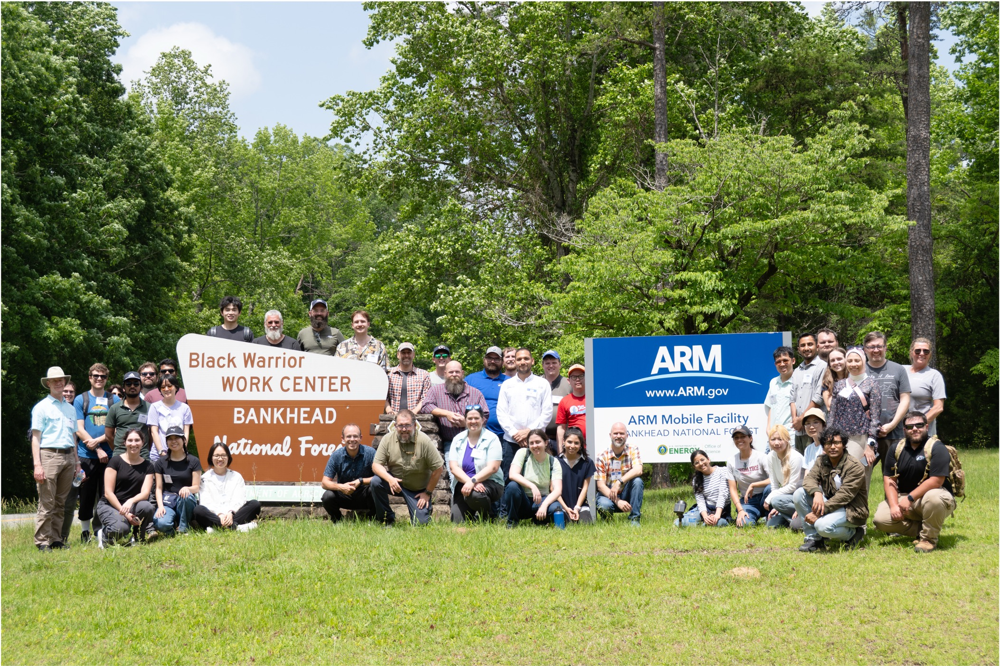
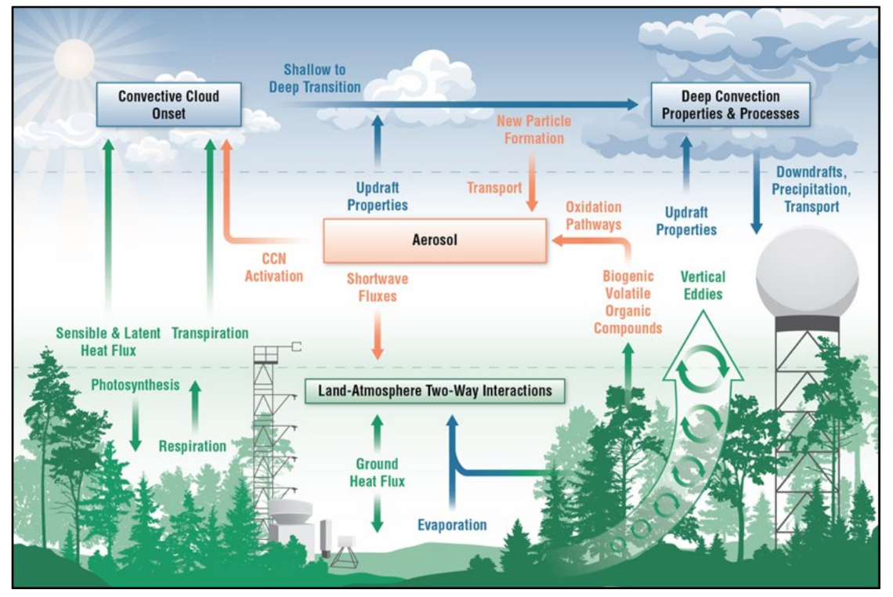

2025 ARM Open Science in the Forest Summer School#
The 2025 ARM Open Science Summer School focused on the newly established ARM Bankhead National Forest (BNF) observatory, charging students to explore earth science processes within the forest canopy utilizing BNF’s unique observations.
Hence Open Science in the Forest.

2025 Summer School Structure#
Hosted by ARM’s Workforce Development Coordinators, Max Grover and Scott Collis, the 2025 ARM Open Science in the Forest Summer School was designed to introduce undergraduate, graduate, post-doctoral students to ARM Data, ARM Computing Infrastructure, and open source software over the course of a week.
The structure of the summer school allows for standard lecture material, interactive Jupyter notebooks hosted on the ARM JupyterHub, and even tours of ARM facilties.
Significant emphasis is placed on group projects, where students work collaborately with mentors and instructors on targeted science topics for the summer school related to the scientific objectives of BNF listed below.

Open Software Supports Summer School#
The 2025 ARM Summer School material are hosted and deployed within the ARM-Development organization.
The Atmospheric data Community Toolkit (ACT) played a central role through-out the summer school. Students were first introduced to ACT through the ACT Basics with BNF Data Jupyter notebook.
Within the afternoon sessions devoted to projects, students interacted with ACT developers to utilize act.discovery, act.io, and act.plotting to download, read and plot various BNF observations.
Summer School Projects#
Hosted by the ARM-Synergy organization, the 2025 ARM Summer School projects were:
Boundary Layer Properties Across Heterogeneous Landscapes (BLIMP)
Land-Atmosphere Interactions Across Heterogeneous Landscapes (Land-Atmosphere-Interactions)
Aerosol Cloud Interactions Deposition (ACID)#
The ACID project focused on the investigating the relationship between aerosol concentrations, cloud and preciptiation.
The group focused on a convective event at BNF (May 8th - May 11th 2025) that was associated with heavy precipitation. The students investigated the role of aerosols acting as cloud condensation nucleai (CCN) in the suppresion of rainfall through the aerosol indirect effect.
Students utilized ACT to download and display ARM datastreams from:
Scanning Mobility Particle Sizer (AOSSMPS),
Ka-band ARM Zenith Radar (KAZR),
Condensation Particle Counter (AOSCPCF),
Aerosol Chemical Speciation Monitor Time-Of-Flight Composition-Dependent Collection Efficiency (ASCMTOFCDCE)
Below is an example of ACID’s usage of ACT:
import act
import os
import matplotlib.pyplot as plt
import warnings
warnings.filterwarnings("ignore", category=FutureWarning)
# Define ARM Live username and token
username = os.getenv("ARM_USERNAME")
token = os.getenv("ARM_PASSWORD")
# Define desired ARM datastream and time period of analysis
datastream = 'bnfaosccn2colaspectraM1.b1'
startdate = '2025-05-08'
enddate = '2025-05-11T23:59:59'
# Download and read the data
result_ccn = act.discovery.download_arm_data(username, token, datastream, startdate, enddate)
ds_ccn = act.io.read_arm_netcdf(result_ccn)
ds_ccn.clean.cleanup()
# Dislay the CCN Number Concentration
disp = act.plotting.TimeSeriesDisplay(ds_ccn, figsize=(12, 8))
disp.plot("concentration", label='CCN Concentration [#/cm³]')
disp.axes[0].set_title('Cloud Condensation Nuclei (CCN) Number Concentration')
disp.axes[0].set_ylabel('Supersaturation (%)')
disp.axes[0].set_xlabel('Time (UTC)')
plt.show()
[DOWNLOADING] bnfaosccn2colaspectraM1.b1.20250508.010251.nc
[DOWNLOADING] bnfaosccn2colaspectraM1.b1.20250509.000954.nc
[DOWNLOADING] bnfaosccn2colaspectraM1.b1.20250510.002958.nc
[DOWNLOADING] bnfaosccn2colaspectraM1.b1.20250511.005002.nc
If you use these data to prepare a publication, please cite:
Koontz, A., Uin, J., Andrews, E., Enekwizu, O., Hayes, C., & Salwen, C. Cloud
Condensation Nuclei Particle Counter (AOSCCN2COLASPECTRA), 2025-05-08 to
2025-05-11, Bankhead National Forest, AL, USA; Long-term Mobile Facility (BNF),
Bankhead National Forest, AL, AMF3 (Main Site) (M1). Atmospheric Radiation
Measurement (ARM) User Facility. https://doi.org/10.5439/1323896
Vertical Velocity in Deep Convection (BNF Deep Convection)#
The BNF Deep Convection group focused on an investigation of updraft velocities within an atmospheric deep convective cell. The project analyzed multiple convective events, including the 20 May 2025 Hunstville, AL EF-1 tornado through a combination of open-source software packages, including ACT, the Python ARM Radar Toolkit (Py-ART), Tracking and Object-Based Analysis of Clouds (tobac), the Python Direct Data Assimilation (PyDDA) for dual-doppler analysis, and MetPy for equivalent potential temperature calculations.
A key portion of the project was the combination of ARM datastreams via ACT to visualize cold pools to impove the understanding of quasi-linaer convective system cell structure and associated dynamical procecess.
Below is a snippet of the groups project utilizing ACT:
import warnings
warnings.filterwarnings("ignore", category=FutureWarning)
import os
import matplotlib.pyplot as plt
import metpy
from metpy.units import units
import act
# Define ARM Live username and token
username = os.getenv("ARM_USERNAME")
token = os.getenv("ARM_PASSWORD")
# Use ACT to easily download the data. Watch for the data citation! Show some support
# for ARM's instrument experts and cite their data if you use it in a publication
result_kazr2 = act.discovery.download_arm_data(
username, token, 'bnfkazr2cfrgeM1.a1', '2025-05-10T03:00:00', '2025-05-10T18:00:00'
)
ds_kazr2 = act.io.read_arm_netcdf(result_kazr2)
# Use ACT to easily download the data. Watch for the data citation! Show some support
# for ARM's instrument experts and cite their data if you use it in a publication
result_met = act.discovery.download_arm_data(
username, token, 'bnfmetM1.b1', '2025-05-10', '2025-05-10T23:59:59'
)
ds_met = act.io.read_arm_netcdf(result_met)
# Calculate virtual potential temperature
dewpt_temp = metpy.calc.dewpoint_from_relative_humidity(ds_met.temp_mean, ds_met.rh_mean)
thetaeK = metpy.calc.equivalent_potential_temperature(
ds_met.atmos_pressure, ds_met.temp_mean, dewpt_temp
)
thetaeC = thetaeK - 273.15 * units.kelvin
# Create a plotting display object with 3 plots
combined = act.plotting.TimeSeriesDisplay(
{
'KAZR2': ds_kazr2.sel(time=slice("2025-05-10T03:00:00", "2025-05-10T18:00:00")),
'MET': ds_met.sel(time=slice("2025-05-10T03:00:00", "2025-05-10T18:00:00")),
'MET': ds_met.sel(time=slice("2025-05-10T03:00:00", "2025-05-10T18:00:00")),
},
figsize=(10, 8),
subplot_shape=(3,),
)
plt.subplots_adjust(hspace=0.4)
# top (first) subplot (index of 0)
combined.plot('reflectivity', dsname='KAZR2', subplot_index=(0,))
# middle (second) subplot (index of 1)
# Plot up the MET temperature and theta-e (calculated from met mean temp and RH)
combined.plot('temp_mean', dsname='MET', subplot_index=(1,))
ax2 = combined.axes[1].twinx() # copies the x axis onto both plots
ax2.plot(ds_met.time, thetaeC, color='orange')
ax2.set_ylabel('Theta-E (degC)', color='orange')
# bottom (third) subplot (index of 2)
# plot MET wind data time series
combined.plot('wspd_arith_mean', dsname='MET', subplot_index=(2,))
# Plot up a day/night background
combined.day_night_background(dsname='MET', subplot_index=(1,))
combined.day_night_background(dsname='MET', subplot_index=(2,))
[DOWNLOADING] bnfkazr2cfrgeM1.a1.20250510.030000.nc
[DOWNLOADING] bnfkazr2cfrgeM1.a1.20250510.035959.nc
[DOWNLOADING] bnfkazr2cfrgeM1.a1.20250510.045959.nc
[DOWNLOADING] bnfkazr2cfrgeM1.a1.20250510.060002.nc
[DOWNLOADING] bnfkazr2cfrgeM1.a1.20250510.070001.nc
[DOWNLOADING] bnfkazr2cfrgeM1.a1.20250510.080001.nc
[DOWNLOADING] bnfkazr2cfrgeM1.a1.20250510.090001.nc
[DOWNLOADING] bnfkazr2cfrgeM1.a1.20250510.100001.nc
[DOWNLOADING] bnfkazr2cfrgeM1.a1.20250510.110000.nc
[DOWNLOADING] bnfkazr2cfrgeM1.a1.20250510.120000.nc
[DOWNLOADING] bnfkazr2cfrgeM1.a1.20250510.130000.nc
[DOWNLOADING] bnfkazr2cfrgeM1.a1.20250510.140000.nc
[DOWNLOADING] bnfkazr2cfrgeM1.a1.20250510.150000.nc
[DOWNLOADING] bnfkazr2cfrgeM1.a1.20250510.155959.nc
[DOWNLOADING] bnfkazr2cfrgeM1.a1.20250510.170002.nc
If you use these data to prepare a publication, please cite:
Lindenmaier, I., Matthews, A., Wendler, T., Melo de Castro, V., Deng, M.,
Rocque, M., & Feng, Y.-C. Ka ARM Zenith Radar (KAZR2CFRGE), 2025-05-10 to
2025-05-10, Bankhead National Forest, AL, USA; Long-term Mobile Facility (BNF),
Bankhead National Forest, AL, AMF3 (Main Site) (M1). Atmospheric Radiation
Measurement (ARM) User Facility. https://doi.org/10.5439/1891991
[DOWNLOADING] bnfmetM1.b1.20250510.000000.cdf
If you use these data to prepare a publication, please cite:
Kyrouac, J., Shi, Y., & Tuftedal, M. Surface Meteorological Instrumentation
(MET), 2025-05-10 to 2025-05-10, Bankhead National Forest, AL, USA; Long-term
Mobile Facility (BNF), Bankhead National Forest, AL, AMF3 (Main Site) (M1).
Atmospheric Radiation Measurement (ARM) User Facility.
https://doi.org/10.5439/1786358
Boundary Layer in Multiple Places (BLIMP)#
The BLIMP group focused on evaluating the BNF planetary boundary layer (PBL) at the ARM BNF main and supplemental sites. Utilizing various ARM observations and Weather Research and Forecasting Model (WRF) simulations, the BLIMP group investigated the diurnal evolution, the difference in PBL characteristics between forecast canopy and farmland locations, and different methods for estimating PBL height from observations.
import warnings
warnings.filterwarnings("ignore")
import numpy as np
import xarray as xr
import matplotlib.pyplot as plt
import matplotlib.colors as colors
import act
from scipy.signal import find_peaks
# Define ARM Live username and token
username = os.getenv("ARM_USERNAME")
token = os.getenv("ARM_PASSWORD")
# Set the datastream and start/enddates
startdate = '2025-04-03'
enddate = '2025-04-05'
# Use ACT to easily download the data. Watch for the data citation! Show some support
# for ARM's instrument experts and cite their data if you use it in a publication
results_dl_m1 = act.discovery.download_arm_data(
username, token, 'bnfdlfptM1.b1', startdate, enddate
)
results_dl_s20 = act.discovery.download_arm_data(
username, token, 'bnfdlfptS20.b1', startdate, enddate
)
# Read and apply QC data
dl_m1 = act.io.read_arm_netcdf(results_dl_m1)
dl_s20 = act.io.read_arm_netcdf(results_dl_s20)
dl_m1.clean.cleanup()
dl_s20.clean.cleanup()
# Subset the datasets for time and height
dl_m1_att = (
dl_m1['attenuated_backscatter']
.sel(time=slice('2025-04-04T00:00:00', '2025-04-05T00:00:00'), range=slice(100, 5000))
.rolling(time=100)
.mean()
.dropna('time')
)
dl_s20_att = (
dl_s20['attenuated_backscatter']
.sel(time=slice('2025-04-04T00:00:00', '2025-04-05T00:00:00'), range=slice(100, 5000))
.rolling(time=100)
.mean()
.dropna('time')
)
# Calculate the PBL height via a gradient descent method
order_1 = np.floor(np.log10(dl_m1_att.values))
idx_1 = []
for n in range(len(dl_m1_att['time'])):
difference_1 = np.diff(order_1[n, :])
idx_1.append(np.where(difference_1 < 0)[0][0])
PBL_1 = dl_m1_att['range'][idx_1]
order_2 = np.floor(np.log10(dl_s20_att.values))
idx_2 = []
for n in range(len(dl_s20_att['time'])):
difference_2 = np.diff(order_2[n, :])
idx_2.append(np.where(difference_2 < 0)[0][0])
PBL_2 = dl_s20_att['range'][idx_2]
# --- Plot the Data ----
plt.figure(figsize=[12, 8])
levels = [1e-10, 1e-9, 1e-8, 1e-7, 1e-6, 1e-5, 1e-4, 1e-3, 1e-2, 1e-1, 1e0]
m1 = plt.contourf(
dl_m1_att['time'].values,
dl_m1_att['range'].values,
np.transpose(dl_m1_att.values),
cmap='ChaseSpectral',
levels=levels,
norm=colors.LogNorm(),
)
plt.colorbar()
plt.plot(dl_m1_att['time'].values, PBL_1)
plt.title("Estimated PBL Height over BNF M1 Site")
plt.show()
[DOWNLOADING] bnfdlfptM1.b1.20250403.000054.cdf
[DOWNLOADING] bnfdlfptM1.b1.20250403.010053.cdf
[DOWNLOADING] bnfdlfptM1.b1.20250403.020053.cdf
[DOWNLOADING] bnfdlfptM1.b1.20250403.030053.cdf
[DOWNLOADING] bnfdlfptM1.b1.20250403.040053.cdf
[DOWNLOADING] bnfdlfptM1.b1.20250403.050054.cdf
[DOWNLOADING] bnfdlfptM1.b1.20250403.060053.cdf
[DOWNLOADING] bnfdlfptM1.b1.20250403.070053.cdf
[DOWNLOADING] bnfdlfptM1.b1.20250403.080053.cdf
[DOWNLOADING] bnfdlfptM1.b1.20250403.090054.cdf
[DOWNLOADING] bnfdlfptM1.b1.20250403.100053.cdf
[DOWNLOADING] bnfdlfptM1.b1.20250403.110053.cdf
[DOWNLOADING] bnfdlfptM1.b1.20250403.120053.cdf
[DOWNLOADING] bnfdlfptM1.b1.20250403.130053.cdf
[DOWNLOADING] bnfdlfptM1.b1.20250403.140053.cdf
[DOWNLOADING] bnfdlfptM1.b1.20250403.150053.cdf
[DOWNLOADING] bnfdlfptM1.b1.20250403.160053.cdf
[DOWNLOADING] bnfdlfptM1.b1.20250403.170053.cdf
[DOWNLOADING] bnfdlfptM1.b1.20250403.180053.cdf
[DOWNLOADING] bnfdlfptM1.b1.20250403.190053.cdf
[DOWNLOADING] bnfdlfptM1.b1.20250403.200053.cdf
[DOWNLOADING] bnfdlfptM1.b1.20250403.210053.cdf
[DOWNLOADING] bnfdlfptM1.b1.20250403.220053.cdf
[DOWNLOADING] bnfdlfptM1.b1.20250403.230054.cdf
[DOWNLOADING] bnfdlfptM1.b1.20250404.000053.cdf
[DOWNLOADING] bnfdlfptM1.b1.20250404.010053.cdf
[DOWNLOADING] bnfdlfptM1.b1.20250404.020053.cdf
[DOWNLOADING] bnfdlfptM1.b1.20250404.030053.cdf
[DOWNLOADING] bnfdlfptM1.b1.20250404.040053.cdf
[DOWNLOADING] bnfdlfptM1.b1.20250404.050053.cdf
[DOWNLOADING] bnfdlfptM1.b1.20250404.060053.cdf
[DOWNLOADING] bnfdlfptM1.b1.20250404.070053.cdf
[DOWNLOADING] bnfdlfptM1.b1.20250404.080054.cdf
[DOWNLOADING] bnfdlfptM1.b1.20250404.090053.cdf
[DOWNLOADING] bnfdlfptM1.b1.20250404.100053.cdf
[DOWNLOADING] bnfdlfptM1.b1.20250404.110053.cdf
[DOWNLOADING] bnfdlfptM1.b1.20250404.120053.cdf
[DOWNLOADING] bnfdlfptM1.b1.20250404.130053.cdf
[DOWNLOADING] bnfdlfptM1.b1.20250404.140053.cdf
[DOWNLOADING] bnfdlfptM1.b1.20250404.150053.cdf
[DOWNLOADING] bnfdlfptM1.b1.20250404.160053.cdf
[DOWNLOADING] bnfdlfptM1.b1.20250404.170053.cdf
[DOWNLOADING] bnfdlfptM1.b1.20250404.180054.cdf
[DOWNLOADING] bnfdlfptM1.b1.20250404.190053.cdf
[DOWNLOADING] bnfdlfptM1.b1.20250404.200053.cdf
[DOWNLOADING] bnfdlfptM1.b1.20250404.210053.cdf
[DOWNLOADING] bnfdlfptM1.b1.20250404.220053.cdf
[DOWNLOADING] bnfdlfptM1.b1.20250404.230053.cdf
If you use these data to prepare a publication, please cite:
Newsom, R., Shi, Y., & Krishnamurthy, R. Doppler Lidar (DLFPT), 2025-04-03 to
2025-04-05, Bankhead National Forest, AL, USA; Long-term Mobile Facility (BNF),
Bankhead National Forest, AL, AMF3 (Main Site) (M1). Atmospheric Radiation
Measurement (ARM) User Facility. https://doi.org/10.5439/1025185
[DOWNLOADING] bnfdlfptS20.b1.20250403.000049.cdf
[DOWNLOADING] bnfdlfptS20.b1.20250403.010049.cdf
[DOWNLOADING] bnfdlfptS20.b1.20250403.020049.cdf
[DOWNLOADING] bnfdlfptS20.b1.20250403.030050.cdf
[DOWNLOADING] bnfdlfptS20.b1.20250403.040049.cdf
[DOWNLOADING] bnfdlfptS20.b1.20250403.050050.cdf
[DOWNLOADING] bnfdlfptS20.b1.20250403.060049.cdf
[DOWNLOADING] bnfdlfptS20.b1.20250403.070050.cdf
[DOWNLOADING] bnfdlfptS20.b1.20250403.080050.cdf
[DOWNLOADING] bnfdlfptS20.b1.20250403.090049.cdf
[DOWNLOADING] bnfdlfptS20.b1.20250403.100049.cdf
[DOWNLOADING] bnfdlfptS20.b1.20250403.110049.cdf
[DOWNLOADING] bnfdlfptS20.b1.20250403.120049.cdf
[DOWNLOADING] bnfdlfptS20.b1.20250403.130049.cdf
[DOWNLOADING] bnfdlfptS20.b1.20250403.140049.cdf
[DOWNLOADING] bnfdlfptS20.b1.20250403.150049.cdf
[DOWNLOADING] bnfdlfptS20.b1.20250403.160050.cdf
[DOWNLOADING] bnfdlfptS20.b1.20250403.170049.cdf
[DOWNLOADING] bnfdlfptS20.b1.20250403.180049.cdf
[DOWNLOADING] bnfdlfptS20.b1.20250403.190049.cdf
[DOWNLOADING] bnfdlfptS20.b1.20250403.200050.cdf
[DOWNLOADING] bnfdlfptS20.b1.20250403.210049.cdf
[DOWNLOADING] bnfdlfptS20.b1.20250403.220049.cdf
[DOWNLOADING] bnfdlfptS20.b1.20250403.230049.cdf
[DOWNLOADING] bnfdlfptS20.b1.20250404.000049.cdf
[DOWNLOADING] bnfdlfptS20.b1.20250404.010049.cdf
[DOWNLOADING] bnfdlfptS20.b1.20250404.020049.cdf
[DOWNLOADING] bnfdlfptS20.b1.20250404.030050.cdf
[DOWNLOADING] bnfdlfptS20.b1.20250404.040050.cdf
[DOWNLOADING] bnfdlfptS20.b1.20250404.050050.cdf
[DOWNLOADING] bnfdlfptS20.b1.20250404.060050.cdf
[DOWNLOADING] bnfdlfptS20.b1.20250404.070050.cdf
[DOWNLOADING] bnfdlfptS20.b1.20250404.080049.cdf
[DOWNLOADING] bnfdlfptS20.b1.20250404.090050.cdf
[DOWNLOADING] bnfdlfptS20.b1.20250404.100049.cdf
[DOWNLOADING] bnfdlfptS20.b1.20250404.110049.cdf
[DOWNLOADING] bnfdlfptS20.b1.20250404.120049.cdf
[DOWNLOADING] bnfdlfptS20.b1.20250404.130050.cdf
[DOWNLOADING] bnfdlfptS20.b1.20250404.140049.cdf
[DOWNLOADING] bnfdlfptS20.b1.20250404.150049.cdf
[DOWNLOADING] bnfdlfptS20.b1.20250404.160050.cdf
[DOWNLOADING] bnfdlfptS20.b1.20250404.170049.cdf
[DOWNLOADING] bnfdlfptS20.b1.20250404.180048.cdf
[DOWNLOADING] bnfdlfptS20.b1.20250404.190048.cdf
[DOWNLOADING] bnfdlfptS20.b1.20250404.200049.cdf
[DOWNLOADING] bnfdlfptS20.b1.20250404.210048.cdf
[DOWNLOADING] bnfdlfptS20.b1.20250404.220048.cdf
[DOWNLOADING] bnfdlfptS20.b1.20250404.230049.cdf
If you use these data to prepare a publication, please cite:
Newsom, R., Shi, Y., & Krishnamurthy, R. Doppler Lidar (DLFPT), 2025-04-03 to
2025-04-05, Bankhead National Forest, AL, USA; Long-term Mobile Facility (BNF),
Bankhead National Forest, AL, Supplemental facility at Courtland (S20).
Atmospheric Radiation Measurement (ARM) User Facility.
https://doi.org/10.5439/1025185
Land-Atmosphere Interactions Across Heterogeneous Landscapes (Land-Atmosphere-Interactions)#
The Land-Atmosphere-Interactions group focused on analyzing the energy balance equation (EBE) for BNF, which describes how energy flows into and out of a system, while utilizing the ARM Eddy Correlation Flux Measurement System (ECOR), ARM Surface Energy Balance System (SEBS), and Solar-Infrared Radiation System (SIRS) observations.
The goal of the project was to reveal the role of neglected processes (e.g. canopy storage, advection) to help validate land surface and climate models.
Below is a snippet of the group project utilizing ACT:
import act
import numpy as np
import xarray as xr
import matplotlib.pyplot as plt
from scipy.stats import linregress
import matplotlib.colors as colors
import pandas as pd
import matplotlib.dates as mdates
# Define ARM Live username and token
username = os.getenv("ARM_USERNAME")
token = os.getenv("ARM_PASSWORD")
# Define the time period of interest
startdate = '2025-02-07'
enddate = '2025-04-30T23:59:59'
# --- SEBS ---
# Set the datastream and start/enddates
datastream_sebs_s40 = 'bnfsebsS40.b1'
datastream_sebs_s30 = 'bnfsebsS30.b1'
datastream_sebs_s20 = 'bnfsebsS20.b1'
# Use ACT to easily download the data. Watch for the data citation! Show some support
# for ARM's instrument experts and cite their data if you use it in a publication
result_sebs_s40 = act.discovery.download_arm_data(
username, token, datastream_sebs_s40, startdate, enddate
)
result_sebs_s30 = act.discovery.download_arm_data(
username, token, datastream_sebs_s30, startdate, enddate
)
result_sebs_s20 = act.discovery.download_arm_data(
username, token, datastream_sebs_s20, startdate, enddate
)
# Let's read in the data using ACT and check out the data
ds_sebs_s40 = act.io.read_arm_netcdf(result_sebs_s40)
ds_sebs_s30 = act.io.read_arm_netcdf(result_sebs_s30)
ds_sebs_s20 = act.io.read_arm_netcdf(result_sebs_s20)
# Apply QC
ds_sebs_s40.clean.cleanup()
ds_sebs_s30.clean.cleanup()
ds_sebs_s20.clean.cleanup()
# --- ECOR ---
datastream_ecor_s40 = 'bnfecorsfS40.b1'
datastream_ecor_s30 = 'bnfecorsfS30.b1'
datastream_ecor_s20 = 'bnfecorsfS20.b1'
result_ecor_s40 = act.discovery.download_arm_data(
username, token, datastream_ecor_s40, startdate, enddate
)
result_ecor_s30 = act.discovery.download_arm_data(
username, token, datastream_ecor_s30, startdate, enddate
)
result_ecor_s20 = act.discovery.download_arm_data(
username, token, datastream_ecor_s20, startdate, enddate
)
# ECOR has sensible and latent heat flux together
ds_ecor_s40 = act.io.read_arm_netcdf(result_ecor_s40)
ds_ecor_s30 = act.io.read_arm_netcdf(result_ecor_s30)
ds_ecor_s20 = act.io.read_arm_netcdf(result_ecor_s20)
# Apply QC
ds_ecor_s40.clean.cleanup()
ds_ecor_s30.clean.cleanup()
ds_ecor_s20.clean.cleanup()
# --- SIRS ---
datastream_sirs_s40 = 'bnfsirsS40.b1'
datastream_sirs_s30 = 'bnfsirsS30.b1'
datastream_sirs_s20 = 'bnfsirsS20.b1'
result_sirs_s40 = act.discovery.download_arm_data(
username, token, datastream_sirs_s40, startdate, enddate
)
result_sirs_s30 = act.discovery.download_arm_data(
username, token, datastream_sirs_s30, startdate, enddate
)
result_sirs_s20 = act.discovery.download_arm_data(
username, token, datastream_sirs_s20, startdate, enddate
)
# Let's read in the data using ACT and check out the data
ds_sirs_s40 = act.io.read_arm_netcdf(result_sirs_s40)
ds_sirs_s30 = act.io.read_arm_netcdf(result_sirs_s30)
ds_sirs_s20 = act.io.read_arm_netcdf(result_sirs_s20)
# Apply QC
ds_sirs_s40.clean.cleanup()
ds_sirs_s30.clean.cleanup()
ds_sirs_s20.clean.cleanup()
# --- Calculations ---
# Calculate net radiation for each site
net_radiation_s40 = (ds_sirs_s40['down_long_hemisp1'] - ds_sirs_s40['up_long_hemisp']) + (
ds_sirs_s40['down_short_hemisp'] - ds_sirs_s40['up_short_hemisp']
)
net_radiation_s30 = (ds_sirs_s30['down_long_hemisp1'] - ds_sirs_s30['up_long_hemisp']) + (
ds_sirs_s30['down_short_hemisp'] - ds_sirs_s30['up_short_hemisp']
)
net_radiation_s20 = (ds_sirs_s20['down_long_hemisp1'] - ds_sirs_s20['up_long_hemisp']) + (
ds_sirs_s20['down_short_hemisp'] - ds_sirs_s20['up_short_hemisp']
)
# Available Energy
avail_e_s40 = net_radiation_s40 - ds_sebs_s40['surface_soil_heat_flux_avg']
avail_e_s30 = net_radiation_s30 - ds_sebs_s30['surface_soil_heat_flux_avg']
avail_e_s20 = net_radiation_s20 - ds_sebs_s20['surface_soil_heat_flux_avg']
# Calculate Turbulent Fluxes for each site
turb_flux_s40 = ds_ecor_s40['sensible_heat_flux'] + ds_ecor_s40['latent_flux']
turb_flux_s30 = ds_ecor_s30['sensible_heat_flux'] + ds_ecor_s30['latent_flux']
turb_flux_s20 = ds_ecor_s20['sensible_heat_flux'] + ds_ecor_s20['latent_flux']
# Align Turbulent Fluxes
turb_flux_aligned_s40, avail_e_aligned_s40 = xr.align(turb_flux_s40, avail_e_s40, join='inner')
turb_flux_aligned_s30, avail_e_aligned_s30 = xr.align(turb_flux_s40, avail_e_s30, join='inner')
turb_flux_aligned_s20, avail_e_aligned_s20 = xr.align(turb_flux_s40, avail_e_s20, join='inner')
# --- Plotting ---
# --- Step 1: Timezone-aware time-of-day coordinate ---
def add_time_of_day(da):
utc_times = pd.to_datetime(da.time.values).tz_localize('UTC')
central_times = utc_times.tz_convert('US/Central')
rounded = central_times.floor('30min')
time_of_day_strs = xr.DataArray(
rounded.strftime('%H:%M'), coords={'time': da.time}, dims='time'
)
return da.assign_coords(time_of_day=time_of_day_strs)
# --- Step 2: Assign to each variable ---
le_td_s40 = add_time_of_day(ds_ecor_s40['latent_flux'])
le_td_s30 = add_time_of_day(ds_ecor_s30['latent_flux'])
le_td_s20 = add_time_of_day(ds_ecor_s20['latent_flux'])
h_td_s40 = add_time_of_day(ds_ecor_s40['sensible_heat_flux'])
h_td_s30 = add_time_of_day(ds_ecor_s30['sensible_heat_flux'])
h_td_s20 = add_time_of_day(ds_ecor_s20['sensible_heat_flux'])
rn_td_s40 = add_time_of_day(net_radiation_s40)
rn_td_s30 = add_time_of_day(net_radiation_s30)
rn_td_s20 = add_time_of_day(net_radiation_s20)
g_td_s40 = add_time_of_day(ds_sebs_s40['surface_soil_heat_flux_avg'])
g_td_s30 = add_time_of_day(ds_sebs_s30['surface_soil_heat_flux_avg'])
g_td_s20 = add_time_of_day(ds_sebs_s20['surface_soil_heat_flux_avg'])
# --- Step 3: Group by time-of-day and average ---
le_avg_s40 = le_td_s40.groupby('time_of_day').mean('time')
le_avg_s30 = le_td_s30.groupby('time_of_day').mean('time')
le_avg_s20 = le_td_s20.groupby('time_of_day').mean('time')
h_avg_s40 = h_td_s40.groupby('time_of_day').mean('time')
h_avg_s30 = h_td_s30.groupby('time_of_day').mean('time')
h_avg_s20 = h_td_s20.groupby('time_of_day').mean('time')
rn_avg_s40 = rn_td_s40.groupby('time_of_day').mean('time')
rn_avg_s30 = rn_td_s30.groupby('time_of_day').mean('time')
rn_avg_s20 = rn_td_s20.groupby('time_of_day').mean('time')
g_avg_s40 = g_td_s40.groupby('time_of_day').mean('time')
g_avg_s30 = g_td_s30.groupby('time_of_day').mean('time')
g_avg_s20 = g_td_s20.groupby('time_of_day').mean('time')
# --- Step 4: Sort by time ---
def sort_by_time(da):
parsed = pd.to_datetime(da.time_of_day.values, format='%H:%M')
sort_idx = np.argsort(parsed)
return da.isel(time_of_day=sort_idx)
le_avg_s40 = sort_by_time(le_avg_s40)
le_avg_s30 = sort_by_time(le_avg_s30)
le_avg_s20 = sort_by_time(le_avg_s20)
h_avg_s40 = sort_by_time(h_avg_s40)
h_avg_s30 = sort_by_time(h_avg_s30)
h_avg_s20 = sort_by_time(h_avg_s20)
rn_avg_s40 = sort_by_time(rn_avg_s40)
rn_avg_s30 = sort_by_time(rn_avg_s30)
rn_avg_s20 = sort_by_time(rn_avg_s20)
g_avg_s40 = sort_by_time(g_avg_s40)
g_avg_s30 = sort_by_time(g_avg_s30)
g_avg_s20 = sort_by_time(g_avg_s20)
# --- Step 5: Prepare time axis ---
time_objects = pd.to_datetime(le_avg_s40.time_of_day.values, format='%H:%M')
fig, axs = plt.subplots(2, 2, figsize=(14, 10), sharex=True)
axs = axs.flatten()
# Site styles: solid lines, different colors
site_styles = {
'S40': {'color': 'blue', 'label': 'S40'},
'S30': {'color': 'black', 'label': 'S30'},
'S20': {'color': 'red', 'label': 'S20'},
}
lw = 2.5
x = time_objects
# LE
axs[0].plot(x, le_avg_s40.values, linestyle='-', linewidth=lw, **site_styles['S40'])
axs[0].plot(x, le_avg_s30.values, linestyle='-', linewidth=lw, **site_styles['S30'])
axs[0].plot(x, le_avg_s20.values, linestyle='-', linewidth=lw, **site_styles['S20'])
axs[0].set_title("Latent Heat Flux (LE)", fontsize=14)
axs[0].legend(fontsize=12)
axs[0].grid(True)
# H
axs[1].plot(x, h_avg_s40.values, linestyle='-', linewidth=lw, **site_styles['S40'])
axs[1].plot(x, h_avg_s30.values, linestyle='-', linewidth=lw, **site_styles['S30'])
axs[1].plot(x, h_avg_s20.values, linestyle='-', linewidth=lw, **site_styles['S20'])
axs[1].set_title("Sensible Heat Flux (H)", fontsize=14)
axs[1].legend(fontsize=12)
axs[1].grid(True)
# Rn
axs[2].plot(x, rn_avg_s40.values, linestyle='-', linewidth=lw, **site_styles['S40'])
axs[2].plot(x, rn_avg_s30.values, linestyle='-', linewidth=lw, **site_styles['S30'])
axs[2].plot(x, rn_avg_s20.values, linestyle='-', linewidth=lw, **site_styles['S20'])
axs[2].set_title("Net Radiation (Rn)", fontsize=14)
axs[2].legend(fontsize=12)
axs[2].grid(True)
# G
axs[3].plot(x, g_avg_s40.values, linestyle='-', linewidth=lw, **site_styles['S40'])
axs[3].plot(x, g_avg_s30.values, linestyle='-', linewidth=lw, **site_styles['S30'])
axs[3].plot(x, g_avg_s20.values, linestyle='-', linewidth=lw, **site_styles['S20'])
axs[3].set_title("Soil Heat Flux (G)", fontsize=14)
axs[3].legend(fontsize=12)
axs[3].grid(True)
# Shared X-axis formatting
for ax in axs:
ax.set_xlim([x[0], x[-1]])
ax.xaxis.set_major_formatter(mdates.DateFormatter('%H:%M'))
ax.xaxis.set_major_locator(mdates.HourLocator(interval=2))
ax.set_xlabel("Time of Day (Central)", fontsize=14)
ax.set_ylabel("W/m²", fontsize=14)
plt.suptitle("Diurnal Cycles at BNF: Comparison Across S40, S30, S20", fontsize=16)
plt.tight_layout(rect=[0, 0.03, 1, 0.95])
plt.show()
[DOWNLOADING] bnfsebsS40.b1.20250207.000000.cdf
[DOWNLOADING] bnfsebsS40.b1.20250208.000000.cdf
[DOWNLOADING] bnfsebsS40.b1.20250209.000000.cdf
[DOWNLOADING] bnfsebsS40.b1.20250210.000000.cdf
[DOWNLOADING] bnfsebsS40.b1.20250211.000000.cdf
[DOWNLOADING] bnfsebsS40.b1.20250212.000000.cdf
[DOWNLOADING] bnfsebsS40.b1.20250213.000000.cdf
[DOWNLOADING] bnfsebsS40.b1.20250214.000000.cdf
[DOWNLOADING] bnfsebsS40.b1.20250215.000000.cdf
[DOWNLOADING] bnfsebsS40.b1.20250216.000000.cdf
[DOWNLOADING] bnfsebsS40.b1.20250217.000000.cdf
[DOWNLOADING] bnfsebsS40.b1.20250218.000000.cdf
[DOWNLOADING] bnfsebsS40.b1.20250219.000000.cdf
[DOWNLOADING] bnfsebsS40.b1.20250220.000000.cdf
[DOWNLOADING] bnfsebsS40.b1.20250221.000000.cdf
[DOWNLOADING] bnfsebsS40.b1.20250222.000000.cdf
[DOWNLOADING] bnfsebsS40.b1.20250223.000000.cdf
[DOWNLOADING] bnfsebsS40.b1.20250224.000000.cdf
[DOWNLOADING] bnfsebsS40.b1.20250225.000000.cdf
[DOWNLOADING] bnfsebsS40.b1.20250226.000000.cdf
[DOWNLOADING] bnfsebsS40.b1.20250227.000000.cdf
[DOWNLOADING] bnfsebsS40.b1.20250228.000000.cdf
[DOWNLOADING] bnfsebsS40.b1.20250301.000000.cdf
[DOWNLOADING] bnfsebsS40.b1.20250302.000000.cdf
[DOWNLOADING] bnfsebsS40.b1.20250303.000000.cdf
[DOWNLOADING] bnfsebsS40.b1.20250304.000000.cdf
[DOWNLOADING] bnfsebsS40.b1.20250305.000000.cdf
[DOWNLOADING] bnfsebsS40.b1.20250306.000000.cdf
[DOWNLOADING] bnfsebsS40.b1.20250307.000000.cdf
[DOWNLOADING] bnfsebsS40.b1.20250308.000000.cdf
[DOWNLOADING] bnfsebsS40.b1.20250309.000000.cdf
[DOWNLOADING] bnfsebsS40.b1.20250310.000000.cdf
[DOWNLOADING] bnfsebsS40.b1.20250311.000000.cdf
[DOWNLOADING] bnfsebsS40.b1.20250312.000000.cdf
[DOWNLOADING] bnfsebsS40.b1.20250313.000000.cdf
[DOWNLOADING] bnfsebsS40.b1.20250314.000000.cdf
[DOWNLOADING] bnfsebsS40.b1.20250315.000000.cdf
[DOWNLOADING] bnfsebsS40.b1.20250316.000000.cdf
[DOWNLOADING] bnfsebsS40.b1.20250317.000000.cdf
[DOWNLOADING] bnfsebsS40.b1.20250318.000000.cdf
[DOWNLOADING] bnfsebsS40.b1.20250319.000000.cdf
[DOWNLOADING] bnfsebsS40.b1.20250320.000000.cdf
[DOWNLOADING] bnfsebsS40.b1.20250321.000000.cdf
[DOWNLOADING] bnfsebsS40.b1.20250322.000000.cdf
[DOWNLOADING] bnfsebsS40.b1.20250323.000000.cdf
[DOWNLOADING] bnfsebsS40.b1.20250324.000000.cdf
[DOWNLOADING] bnfsebsS40.b1.20250325.000000.cdf
[DOWNLOADING] bnfsebsS40.b1.20250326.000000.cdf
[DOWNLOADING] bnfsebsS40.b1.20250327.000000.cdf
[DOWNLOADING] bnfsebsS40.b1.20250328.000000.cdf
[DOWNLOADING] bnfsebsS40.b1.20250329.000000.cdf
[DOWNLOADING] bnfsebsS40.b1.20250330.000000.cdf
[DOWNLOADING] bnfsebsS40.b1.20250331.000000.cdf
[DOWNLOADING] bnfsebsS40.b1.20250401.000000.cdf
[DOWNLOADING] bnfsebsS40.b1.20250402.000000.cdf
[DOWNLOADING] bnfsebsS40.b1.20250403.000000.cdf
[DOWNLOADING] bnfsebsS40.b1.20250404.000000.cdf
[DOWNLOADING] bnfsebsS40.b1.20250405.000000.cdf
[DOWNLOADING] bnfsebsS40.b1.20250406.000000.cdf
[DOWNLOADING] bnfsebsS40.b1.20250407.000000.cdf
[DOWNLOADING] bnfsebsS40.b1.20250408.000000.cdf
[DOWNLOADING] bnfsebsS40.b1.20250409.000000.cdf
[DOWNLOADING] bnfsebsS40.b1.20250410.000000.cdf
[DOWNLOADING] bnfsebsS40.b1.20250411.000000.cdf
[DOWNLOADING] bnfsebsS40.b1.20250412.000000.cdf
[DOWNLOADING] bnfsebsS40.b1.20250413.000000.cdf
[DOWNLOADING] bnfsebsS40.b1.20250414.000000.cdf
[DOWNLOADING] bnfsebsS40.b1.20250415.000000.cdf
[DOWNLOADING] bnfsebsS40.b1.20250416.000000.cdf
[DOWNLOADING] bnfsebsS40.b1.20250417.000000.cdf
[DOWNLOADING] bnfsebsS40.b1.20250418.000000.cdf
[DOWNLOADING] bnfsebsS40.b1.20250419.000000.cdf
[DOWNLOADING] bnfsebsS40.b1.20250420.000000.cdf
[DOWNLOADING] bnfsebsS40.b1.20250421.000000.cdf
[DOWNLOADING] bnfsebsS40.b1.20250422.000000.cdf
[DOWNLOADING] bnfsebsS40.b1.20250423.000000.cdf
[DOWNLOADING] bnfsebsS40.b1.20250424.000000.cdf
[DOWNLOADING] bnfsebsS40.b1.20250425.000000.cdf
[DOWNLOADING] bnfsebsS40.b1.20250426.000000.cdf
[DOWNLOADING] bnfsebsS40.b1.20250427.000000.cdf
[DOWNLOADING] bnfsebsS40.b1.20250428.000000.cdf
[DOWNLOADING] bnfsebsS40.b1.20250429.000000.cdf
[DOWNLOADING] bnfsebsS40.b1.20250430.000000.cdf
If you use these data to prepare a publication, please cite:
Sullivan, R., Keeler, E., Pal, S., & Kyrouac, J. Surface Energy Balance System
(SEBS), 2025-02-07 to 2025-04-30, Bankhead National Forest, AL, USA; Long-term
Mobile Facility (BNF), Bankhead National Forest, AL, Supplemental facility at
Double Springs (S40). Atmospheric Radiation Measurement (ARM) User Facility.
https://doi.org/10.5439/1984921
[DOWNLOADING] bnfsebsS30.b1.20250207.000000.cdf
[DOWNLOADING] bnfsebsS30.b1.20250208.000000.cdf
[DOWNLOADING] bnfsebsS30.b1.20250209.000000.cdf
[DOWNLOADING] bnfsebsS30.b1.20250210.000000.cdf
[DOWNLOADING] bnfsebsS30.b1.20250211.000000.cdf
[DOWNLOADING] bnfsebsS30.b1.20250212.000000.cdf
[DOWNLOADING] bnfsebsS30.b1.20250213.000000.cdf
[DOWNLOADING] bnfsebsS30.b1.20250214.000000.cdf
[DOWNLOADING] bnfsebsS30.b1.20250215.000000.cdf
[DOWNLOADING] bnfsebsS30.b1.20250216.000000.cdf
[DOWNLOADING] bnfsebsS30.b1.20250217.000000.cdf
[DOWNLOADING] bnfsebsS30.b1.20250218.000000.cdf
[DOWNLOADING] bnfsebsS30.b1.20250219.000000.cdf
[DOWNLOADING] bnfsebsS30.b1.20250220.000000.cdf
[DOWNLOADING] bnfsebsS30.b1.20250221.000000.cdf
[DOWNLOADING] bnfsebsS30.b1.20250222.000000.cdf
[DOWNLOADING] bnfsebsS30.b1.20250223.000000.cdf
[DOWNLOADING] bnfsebsS30.b1.20250224.000000.cdf
[DOWNLOADING] bnfsebsS30.b1.20250225.000000.cdf
[DOWNLOADING] bnfsebsS30.b1.20250226.000000.cdf
[DOWNLOADING] bnfsebsS30.b1.20250227.000000.cdf
[DOWNLOADING] bnfsebsS30.b1.20250228.000000.cdf
[DOWNLOADING] bnfsebsS30.b1.20250301.000000.cdf
[DOWNLOADING] bnfsebsS30.b1.20250302.000000.cdf
[DOWNLOADING] bnfsebsS30.b1.20250303.000000.cdf
[DOWNLOADING] bnfsebsS30.b1.20250304.000000.cdf
[DOWNLOADING] bnfsebsS30.b1.20250305.000000.cdf
[DOWNLOADING] bnfsebsS30.b1.20250306.000000.cdf
[DOWNLOADING] bnfsebsS30.b1.20250307.000000.cdf
[DOWNLOADING] bnfsebsS30.b1.20250308.000000.cdf
[DOWNLOADING] bnfsebsS30.b1.20250309.000000.cdf
[DOWNLOADING] bnfsebsS30.b1.20250310.000000.cdf
[DOWNLOADING] bnfsebsS30.b1.20250311.000000.cdf
[DOWNLOADING] bnfsebsS30.b1.20250312.000000.cdf
[DOWNLOADING] bnfsebsS30.b1.20250313.000000.cdf
[DOWNLOADING] bnfsebsS30.b1.20250314.000000.cdf
[DOWNLOADING] bnfsebsS30.b1.20250315.000000.cdf
[DOWNLOADING] bnfsebsS30.b1.20250316.000000.cdf
[DOWNLOADING] bnfsebsS30.b1.20250317.000000.cdf
[DOWNLOADING] bnfsebsS30.b1.20250318.000000.cdf
[DOWNLOADING] bnfsebsS30.b1.20250319.000000.cdf
[DOWNLOADING] bnfsebsS30.b1.20250320.000000.cdf
[DOWNLOADING] bnfsebsS30.b1.20250321.000000.cdf
[DOWNLOADING] bnfsebsS30.b1.20250322.000000.cdf
[DOWNLOADING] bnfsebsS30.b1.20250323.000000.cdf
[DOWNLOADING] bnfsebsS30.b1.20250324.000000.cdf
[DOWNLOADING] bnfsebsS30.b1.20250325.000000.cdf
[DOWNLOADING] bnfsebsS30.b1.20250326.000000.cdf
[DOWNLOADING] bnfsebsS30.b1.20250327.000000.cdf
[DOWNLOADING] bnfsebsS30.b1.20250328.000000.cdf
[DOWNLOADING] bnfsebsS30.b1.20250329.000000.cdf
[DOWNLOADING] bnfsebsS30.b1.20250330.000000.cdf
[DOWNLOADING] bnfsebsS30.b1.20250331.000000.cdf
[DOWNLOADING] bnfsebsS30.b1.20250401.000000.cdf
[DOWNLOADING] bnfsebsS30.b1.20250402.000000.cdf
[DOWNLOADING] bnfsebsS30.b1.20250403.000000.cdf
[DOWNLOADING] bnfsebsS30.b1.20250404.000000.cdf
[DOWNLOADING] bnfsebsS30.b1.20250405.000000.cdf
[DOWNLOADING] bnfsebsS30.b1.20250406.000000.cdf
[DOWNLOADING] bnfsebsS30.b1.20250407.000000.cdf
[DOWNLOADING] bnfsebsS30.b1.20250408.000000.cdf
[DOWNLOADING] bnfsebsS30.b1.20250409.000000.cdf
[DOWNLOADING] bnfsebsS30.b1.20250410.000000.cdf
[DOWNLOADING] bnfsebsS30.b1.20250411.000000.cdf
[DOWNLOADING] bnfsebsS30.b1.20250412.000000.cdf
[DOWNLOADING] bnfsebsS30.b1.20250413.000000.cdf
[DOWNLOADING] bnfsebsS30.b1.20250414.000000.cdf
[DOWNLOADING] bnfsebsS30.b1.20250415.000000.cdf
[DOWNLOADING] bnfsebsS30.b1.20250416.000000.cdf
[DOWNLOADING] bnfsebsS30.b1.20250417.000000.cdf
[DOWNLOADING] bnfsebsS30.b1.20250418.000000.cdf
[DOWNLOADING] bnfsebsS30.b1.20250419.000000.cdf
[DOWNLOADING] bnfsebsS30.b1.20250420.000000.cdf
[DOWNLOADING] bnfsebsS30.b1.20250421.000000.cdf
[DOWNLOADING] bnfsebsS30.b1.20250422.000000.cdf
[DOWNLOADING] bnfsebsS30.b1.20250423.000000.cdf
[DOWNLOADING] bnfsebsS30.b1.20250424.000000.cdf
[DOWNLOADING] bnfsebsS30.b1.20250425.000000.cdf
[DOWNLOADING] bnfsebsS30.b1.20250426.000000.cdf
[DOWNLOADING] bnfsebsS30.b1.20250427.000000.cdf
[DOWNLOADING] bnfsebsS30.b1.20250428.000000.cdf
[DOWNLOADING] bnfsebsS30.b1.20250429.000000.cdf
[DOWNLOADING] bnfsebsS30.b1.20250430.000000.cdf
If you use these data to prepare a publication, please cite:
Sullivan, R., Keeler, E., Pal, S., & Kyrouac, J. Surface Energy Balance System
(SEBS), 2025-02-07 to 2025-04-30, Bankhead National Forest, AL, USA; Long-term
Mobile Facility (BNF), Bankhead National Forest, AL, Supplemental facility at
Falkville (S30). Atmospheric Radiation Measurement (ARM) User Facility.
https://doi.org/10.5439/1984921
[DOWNLOADING] bnfsebsS20.b1.20250207.000000.cdf
[DOWNLOADING] bnfsebsS20.b1.20250208.000000.cdf
[DOWNLOADING] bnfsebsS20.b1.20250209.000000.cdf
[DOWNLOADING] bnfsebsS20.b1.20250210.000000.cdf
[DOWNLOADING] bnfsebsS20.b1.20250211.000000.cdf
[DOWNLOADING] bnfsebsS20.b1.20250212.000000.cdf
[DOWNLOADING] bnfsebsS20.b1.20250213.000000.cdf
[DOWNLOADING] bnfsebsS20.b1.20250214.000000.cdf
[DOWNLOADING] bnfsebsS20.b1.20250215.000000.cdf
[DOWNLOADING] bnfsebsS20.b1.20250216.000000.cdf
[DOWNLOADING] bnfsebsS20.b1.20250217.000000.cdf
[DOWNLOADING] bnfsebsS20.b1.20250218.003000.cdf
[DOWNLOADING] bnfsebsS20.b1.20250219.000000.cdf
[DOWNLOADING] bnfsebsS20.b1.20250220.000000.cdf
[DOWNLOADING] bnfsebsS20.b1.20250221.000000.cdf
[DOWNLOADING] bnfsebsS20.b1.20250222.000000.cdf
[DOWNLOADING] bnfsebsS20.b1.20250223.000000.cdf
[DOWNLOADING] bnfsebsS20.b1.20250224.000000.cdf
[DOWNLOADING] bnfsebsS20.b1.20250225.000000.cdf
[DOWNLOADING] bnfsebsS20.b1.20250226.000000.cdf
[DOWNLOADING] bnfsebsS20.b1.20250227.000000.cdf
[DOWNLOADING] bnfsebsS20.b1.20250228.003000.cdf
[DOWNLOADING] bnfsebsS20.b1.20250301.000000.cdf
[DOWNLOADING] bnfsebsS20.b1.20250302.000000.cdf
[DOWNLOADING] bnfsebsS20.b1.20250303.000000.cdf
[DOWNLOADING] bnfsebsS20.b1.20250304.000000.cdf
[DOWNLOADING] bnfsebsS20.b1.20250305.000000.cdf
[DOWNLOADING] bnfsebsS20.b1.20250306.000000.cdf
[DOWNLOADING] bnfsebsS20.b1.20250307.000000.cdf
[DOWNLOADING] bnfsebsS20.b1.20250308.000000.cdf
[DOWNLOADING] bnfsebsS20.b1.20250309.000000.cdf
[DOWNLOADING] bnfsebsS20.b1.20250310.000000.cdf
[DOWNLOADING] bnfsebsS20.b1.20250311.000000.cdf
[DOWNLOADING] bnfsebsS20.b1.20250312.000000.cdf
[DOWNLOADING] bnfsebsS20.b1.20250313.000000.cdf
[DOWNLOADING] bnfsebsS20.b1.20250314.000000.cdf
[DOWNLOADING] bnfsebsS20.b1.20250315.000000.cdf
[DOWNLOADING] bnfsebsS20.b1.20250316.000000.cdf
[DOWNLOADING] bnfsebsS20.b1.20250317.000000.cdf
[DOWNLOADING] bnfsebsS20.b1.20250318.000000.cdf
[DOWNLOADING] bnfsebsS20.b1.20250319.000000.cdf
[DOWNLOADING] bnfsebsS20.b1.20250320.000000.cdf
[DOWNLOADING] bnfsebsS20.b1.20250321.000000.cdf
[DOWNLOADING] bnfsebsS20.b1.20250322.000000.cdf
[DOWNLOADING] bnfsebsS20.b1.20250323.000000.cdf
[DOWNLOADING] bnfsebsS20.b1.20250324.000000.cdf
[DOWNLOADING] bnfsebsS20.b1.20250325.000000.cdf
[DOWNLOADING] bnfsebsS20.b1.20250326.000000.cdf
[DOWNLOADING] bnfsebsS20.b1.20250327.000000.cdf
[DOWNLOADING] bnfsebsS20.b1.20250328.000000.cdf
[DOWNLOADING] bnfsebsS20.b1.20250329.000000.cdf
[DOWNLOADING] bnfsebsS20.b1.20250330.000000.cdf
[DOWNLOADING] bnfsebsS20.b1.20250331.000000.cdf
[DOWNLOADING] bnfsebsS20.b1.20250401.000000.cdf
[DOWNLOADING] bnfsebsS20.b1.20250402.000000.cdf
[DOWNLOADING] bnfsebsS20.b1.20250403.000000.cdf
[DOWNLOADING] bnfsebsS20.b1.20250404.000000.cdf
[DOWNLOADING] bnfsebsS20.b1.20250405.000000.cdf
[DOWNLOADING] bnfsebsS20.b1.20250406.000000.cdf
[DOWNLOADING] bnfsebsS20.b1.20250407.000000.cdf
[DOWNLOADING] bnfsebsS20.b1.20250408.000000.cdf
[DOWNLOADING] bnfsebsS20.b1.20250409.000000.cdf
[DOWNLOADING] bnfsebsS20.b1.20250410.000000.cdf
[DOWNLOADING] bnfsebsS20.b1.20250411.000000.cdf
[DOWNLOADING] bnfsebsS20.b1.20250412.000000.cdf
[DOWNLOADING] bnfsebsS20.b1.20250413.000000.cdf
[DOWNLOADING] bnfsebsS20.b1.20250414.000000.cdf
[DOWNLOADING] bnfsebsS20.b1.20250415.000000.cdf
[DOWNLOADING] bnfsebsS20.b1.20250416.000000.cdf
[DOWNLOADING] bnfsebsS20.b1.20250417.000000.cdf
[DOWNLOADING] bnfsebsS20.b1.20250418.000000.cdf
[DOWNLOADING] bnfsebsS20.b1.20250419.000000.cdf
[DOWNLOADING] bnfsebsS20.b1.20250420.000000.cdf
[DOWNLOADING] bnfsebsS20.b1.20250421.000000.cdf
[DOWNLOADING] bnfsebsS20.b1.20250422.000000.cdf
[DOWNLOADING] bnfsebsS20.b1.20250423.000000.cdf
[DOWNLOADING] bnfsebsS20.b1.20250424.000000.cdf
[DOWNLOADING] bnfsebsS20.b1.20250425.000000.cdf
[DOWNLOADING] bnfsebsS20.b1.20250426.000000.cdf
[DOWNLOADING] bnfsebsS20.b1.20250427.000000.cdf
[DOWNLOADING] bnfsebsS20.b1.20250428.000000.cdf
[DOWNLOADING] bnfsebsS20.b1.20250429.000000.cdf
[DOWNLOADING] bnfsebsS20.b1.20250430.000000.cdf
If you use these data to prepare a publication, please cite:
Sullivan, R., Keeler, E., Pal, S., & Kyrouac, J. Surface Energy Balance System
(SEBS), 2025-02-07 to 2025-04-30, Bankhead National Forest, AL, USA; Long-term
Mobile Facility (BNF), Bankhead National Forest, AL, Supplemental facility at
Courtland (S20). Atmospheric Radiation Measurement (ARM) User Facility.
https://doi.org/10.5439/1984921
[DOWNLOADING] bnfecorsfS40.b1.20250207.000000.nc
[DOWNLOADING] bnfecorsfS40.b1.20250208.000000.nc
[DOWNLOADING] bnfecorsfS40.b1.20250209.000000.nc
[DOWNLOADING] bnfecorsfS40.b1.20250210.000000.nc
[DOWNLOADING] bnfecorsfS40.b1.20250211.000000.nc
[DOWNLOADING] bnfecorsfS40.b1.20250212.000000.nc
[DOWNLOADING] bnfecorsfS40.b1.20250212.233000.nc
[DOWNLOADING] bnfecorsfS40.b1.20250213.000000.nc
[DOWNLOADING] bnfecorsfS40.b1.20250214.000000.nc
[DOWNLOADING] bnfecorsfS40.b1.20250215.000000.nc
[DOWNLOADING] bnfecorsfS40.b1.20250216.000000.nc
[DOWNLOADING] bnfecorsfS40.b1.20250217.000000.nc
[DOWNLOADING] bnfecorsfS40.b1.20250218.000000.nc
[DOWNLOADING] bnfecorsfS40.b1.20250219.000000.nc
[DOWNLOADING] bnfecorsfS40.b1.20250220.000000.nc
[DOWNLOADING] bnfecorsfS40.b1.20250221.000000.nc
[DOWNLOADING] bnfecorsfS40.b1.20250222.000000.nc
[DOWNLOADING] bnfecorsfS40.b1.20250223.000000.nc
[DOWNLOADING] bnfecorsfS40.b1.20250224.000000.nc
[DOWNLOADING] bnfecorsfS40.b1.20250225.000000.nc
[DOWNLOADING] bnfecorsfS40.b1.20250226.000000.nc
[DOWNLOADING] bnfecorsfS40.b1.20250227.000000.nc
[DOWNLOADING] bnfecorsfS40.b1.20250228.000000.nc
[DOWNLOADING] bnfecorsfS40.b1.20250301.000000.nc
[DOWNLOADING] bnfecorsfS40.b1.20250302.000000.nc
[DOWNLOADING] bnfecorsfS40.b1.20250303.000000.nc
[DOWNLOADING] bnfecorsfS40.b1.20250304.000000.nc
[DOWNLOADING] bnfecorsfS40.b1.20250305.000000.nc
[DOWNLOADING] bnfecorsfS40.b1.20250306.000000.nc
[DOWNLOADING] bnfecorsfS40.b1.20250307.000000.nc
[DOWNLOADING] bnfecorsfS40.b1.20250307.233000.nc
[DOWNLOADING] bnfecorsfS40.b1.20250308.000000.nc
[DOWNLOADING] bnfecorsfS40.b1.20250309.000000.nc
[DOWNLOADING] bnfecorsfS40.b1.20250310.000000.nc
[DOWNLOADING] bnfecorsfS40.b1.20250311.000000.nc
[DOWNLOADING] bnfecorsfS40.b1.20250312.000000.nc
[DOWNLOADING] bnfecorsfS40.b1.20250313.000000.nc
[DOWNLOADING] bnfecorsfS40.b1.20250403.160000.nc
[DOWNLOADING] bnfecorsfS40.b1.20250404.000000.nc
[DOWNLOADING] bnfecorsfS40.b1.20250405.000000.nc
[DOWNLOADING] bnfecorsfS40.b1.20250406.000000.nc
[DOWNLOADING] bnfecorsfS40.b1.20250407.000000.nc
[DOWNLOADING] bnfecorsfS40.b1.20250408.000000.nc
[DOWNLOADING] bnfecorsfS40.b1.20250409.000000.nc
[DOWNLOADING] bnfecorsfS40.b1.20250410.000000.nc
[DOWNLOADING] bnfecorsfS40.b1.20250411.000000.nc
[DOWNLOADING] bnfecorsfS40.b1.20250412.000000.nc
[DOWNLOADING] bnfecorsfS40.b1.20250413.000000.nc
[DOWNLOADING] bnfecorsfS40.b1.20250414.000000.nc
[DOWNLOADING] bnfecorsfS40.b1.20250415.000000.nc
[DOWNLOADING] bnfecorsfS40.b1.20250416.000000.nc
[DOWNLOADING] bnfecorsfS40.b1.20250417.000000.nc
[DOWNLOADING] bnfecorsfS40.b1.20250418.000000.nc
[DOWNLOADING] bnfecorsfS40.b1.20250419.000000.nc
[DOWNLOADING] bnfecorsfS40.b1.20250420.000000.nc
[DOWNLOADING] bnfecorsfS40.b1.20250421.000000.nc
[DOWNLOADING] bnfecorsfS40.b1.20250422.000000.nc
[DOWNLOADING] bnfecorsfS40.b1.20250423.000000.nc
[DOWNLOADING] bnfecorsfS40.b1.20250424.000000.nc
[DOWNLOADING] bnfecorsfS40.b1.20250425.000000.nc
[DOWNLOADING] bnfecorsfS40.b1.20250426.000000.nc
[DOWNLOADING] bnfecorsfS40.b1.20250427.000000.nc
[DOWNLOADING] bnfecorsfS40.b1.20250428.000000.nc
[DOWNLOADING] bnfecorsfS40.b1.20250429.000000.nc
[DOWNLOADING] bnfecorsfS40.b1.20250430.000000.nc
If you use these data to prepare a publication, please cite:
Sullivan, R., Cook, D., Shi, Y., Keeler, E., & Pal, S. Eddy Correlation Flux
Measurement System (ECORSF), 2025-02-07 to 2025-04-30, Bankhead National Forest,
AL, USA; Long-term Mobile Facility (BNF), Bankhead National Forest, AL,
Supplemental facility at Double Springs (S40). Atmospheric Radiation Measurement
(ARM) User Facility. https://doi.org/10.5439/1494128
[DOWNLOADING] bnfecorsfS30.b1.20250207.000000.nc
[DOWNLOADING] bnfecorsfS30.b1.20250208.000000.nc
[DOWNLOADING] bnfecorsfS30.b1.20250209.000000.nc
[DOWNLOADING] bnfecorsfS30.b1.20250210.000000.nc
[DOWNLOADING] bnfecorsfS30.b1.20250211.000000.nc
[DOWNLOADING] bnfecorsfS30.b1.20250212.000000.nc
[DOWNLOADING] bnfecorsfS30.b1.20250213.000000.nc
[DOWNLOADING] bnfecorsfS30.b1.20250214.000000.nc
[DOWNLOADING] bnfecorsfS30.b1.20250215.000000.nc
[DOWNLOADING] bnfecorsfS30.b1.20250216.000000.nc
[DOWNLOADING] bnfecorsfS30.b1.20250217.000000.nc
[DOWNLOADING] bnfecorsfS30.b1.20250218.000000.nc
[DOWNLOADING] bnfecorsfS30.b1.20250219.000000.nc
[DOWNLOADING] bnfecorsfS30.b1.20250220.000000.nc
[DOWNLOADING] bnfecorsfS30.b1.20250221.000000.nc
[DOWNLOADING] bnfecorsfS30.b1.20250222.000000.nc
[DOWNLOADING] bnfecorsfS30.b1.20250223.000000.nc
[DOWNLOADING] bnfecorsfS30.b1.20250224.000000.nc
[DOWNLOADING] bnfecorsfS30.b1.20250225.000000.nc
[DOWNLOADING] bnfecorsfS30.b1.20250226.000000.nc
[DOWNLOADING] bnfecorsfS30.b1.20250227.000000.nc
[DOWNLOADING] bnfecorsfS30.b1.20250228.000000.nc
[DOWNLOADING] bnfecorsfS30.b1.20250301.000000.nc
[DOWNLOADING] bnfecorsfS30.b1.20250302.000000.nc
[DOWNLOADING] bnfecorsfS30.b1.20250303.000000.nc
[DOWNLOADING] bnfecorsfS30.b1.20250304.000000.nc
[DOWNLOADING] bnfecorsfS30.b1.20250305.000000.nc
[DOWNLOADING] bnfecorsfS30.b1.20250306.000000.nc
[DOWNLOADING] bnfecorsfS30.b1.20250307.000000.nc
[DOWNLOADING] bnfecorsfS30.b1.20250308.000000.nc
[DOWNLOADING] bnfecorsfS30.b1.20250309.000000.nc
[DOWNLOADING] bnfecorsfS30.b1.20250310.000000.nc
[DOWNLOADING] bnfecorsfS30.b1.20250311.000000.nc
[DOWNLOADING] bnfecorsfS30.b1.20250312.000000.nc
[DOWNLOADING] bnfecorsfS30.b1.20250313.000000.nc
[DOWNLOADING] bnfecorsfS30.b1.20250314.000000.nc
[DOWNLOADING] bnfecorsfS30.b1.20250315.000000.nc
[DOWNLOADING] bnfecorsfS30.b1.20250316.000000.nc
[DOWNLOADING] bnfecorsfS30.b1.20250317.000000.nc
[DOWNLOADING] bnfecorsfS30.b1.20250318.000000.nc
[DOWNLOADING] bnfecorsfS30.b1.20250319.000000.nc
[DOWNLOADING] bnfecorsfS30.b1.20250320.000000.nc
[DOWNLOADING] bnfecorsfS30.b1.20250321.000000.nc
[DOWNLOADING] bnfecorsfS30.b1.20250322.000000.nc
[DOWNLOADING] bnfecorsfS30.b1.20250323.000000.nc
[DOWNLOADING] bnfecorsfS30.b1.20250324.000000.nc
[DOWNLOADING] bnfecorsfS30.b1.20250325.000000.nc
[DOWNLOADING] bnfecorsfS30.b1.20250326.000000.nc
[DOWNLOADING] bnfecorsfS30.b1.20250327.000000.nc
[DOWNLOADING] bnfecorsfS30.b1.20250328.000000.nc
[DOWNLOADING] bnfecorsfS30.b1.20250329.000000.nc
[DOWNLOADING] bnfecorsfS30.b1.20250330.000000.nc
[DOWNLOADING] bnfecorsfS30.b1.20250331.000000.nc
[DOWNLOADING] bnfecorsfS30.b1.20250401.000000.nc
[DOWNLOADING] bnfecorsfS30.b1.20250402.000000.nc
[DOWNLOADING] bnfecorsfS30.b1.20250403.000000.nc
[DOWNLOADING] bnfecorsfS30.b1.20250404.000000.nc
[DOWNLOADING] bnfecorsfS30.b1.20250405.000000.nc
[DOWNLOADING] bnfecorsfS30.b1.20250406.000000.nc
[DOWNLOADING] bnfecorsfS30.b1.20250407.000000.nc
[DOWNLOADING] bnfecorsfS30.b1.20250408.000000.nc
[DOWNLOADING] bnfecorsfS30.b1.20250409.000000.nc
[DOWNLOADING] bnfecorsfS30.b1.20250410.000000.nc
[DOWNLOADING] bnfecorsfS30.b1.20250411.003000.nc
[DOWNLOADING] bnfecorsfS30.b1.20250412.000000.nc
[DOWNLOADING] bnfecorsfS30.b1.20250413.000000.nc
[DOWNLOADING] bnfecorsfS30.b1.20250414.000000.nc
[DOWNLOADING] bnfecorsfS30.b1.20250415.000000.nc
[DOWNLOADING] bnfecorsfS30.b1.20250416.000000.nc
[DOWNLOADING] bnfecorsfS30.b1.20250417.000000.nc
[DOWNLOADING] bnfecorsfS30.b1.20250418.000000.nc
[DOWNLOADING] bnfecorsfS30.b1.20250419.000000.nc
[DOWNLOADING] bnfecorsfS30.b1.20250420.000000.nc
[DOWNLOADING] bnfecorsfS30.b1.20250421.000000.nc
[DOWNLOADING] bnfecorsfS30.b1.20250422.000000.nc
[DOWNLOADING] bnfecorsfS30.b1.20250423.000000.nc
[DOWNLOADING] bnfecorsfS30.b1.20250424.000000.nc
[DOWNLOADING] bnfecorsfS30.b1.20250425.000000.nc
[DOWNLOADING] bnfecorsfS30.b1.20250426.000000.nc
[DOWNLOADING] bnfecorsfS30.b1.20250427.000000.nc
[DOWNLOADING] bnfecorsfS30.b1.20250428.000000.nc
[DOWNLOADING] bnfecorsfS30.b1.20250429.000000.nc
[DOWNLOADING] bnfecorsfS30.b1.20250430.000000.nc
If you use these data to prepare a publication, please cite:
Sullivan, R., Cook, D., Shi, Y., Keeler, E., & Pal, S. Eddy Correlation Flux
Measurement System (ECORSF), 2025-02-07 to 2025-04-30, Bankhead National Forest,
AL, USA; Long-term Mobile Facility (BNF), Bankhead National Forest, AL,
Supplemental facility at Falkville (S30). Atmospheric Radiation Measurement
(ARM) User Facility. https://doi.org/10.5439/1494128
[DOWNLOADING] bnfecorsfS20.b1.20250207.000000.nc
[DOWNLOADING] bnfecorsfS20.b1.20250208.000000.nc
[DOWNLOADING] bnfecorsfS20.b1.20250209.000000.nc
[DOWNLOADING] bnfecorsfS20.b1.20250210.000000.nc
[DOWNLOADING] bnfecorsfS20.b1.20250211.000000.nc
[DOWNLOADING] bnfecorsfS20.b1.20250212.000000.nc
[DOWNLOADING] bnfecorsfS20.b1.20250212.220000.nc
[DOWNLOADING] bnfecorsfS20.b1.20250213.000000.nc
[DOWNLOADING] bnfecorsfS20.b1.20250214.000000.nc
[DOWNLOADING] bnfecorsfS20.b1.20250215.000000.nc
[DOWNLOADING] bnfecorsfS20.b1.20250216.000000.nc
[DOWNLOADING] bnfecorsfS20.b1.20250217.000000.nc
[DOWNLOADING] bnfecorsfS20.b1.20250218.000000.nc
[DOWNLOADING] bnfecorsfS20.b1.20250219.000000.nc
[DOWNLOADING] bnfecorsfS20.b1.20250220.000000.nc
[DOWNLOADING] bnfecorsfS20.b1.20250221.000000.nc
[DOWNLOADING] bnfecorsfS20.b1.20250222.000000.nc
[DOWNLOADING] bnfecorsfS20.b1.20250223.000000.nc
[DOWNLOADING] bnfecorsfS20.b1.20250224.000000.nc
[DOWNLOADING] bnfecorsfS20.b1.20250225.000000.nc
[DOWNLOADING] bnfecorsfS20.b1.20250226.000000.nc
[DOWNLOADING] bnfecorsfS20.b1.20250227.000000.nc
[DOWNLOADING] bnfecorsfS20.b1.20250228.000000.nc
[DOWNLOADING] bnfecorsfS20.b1.20250301.000000.nc
[DOWNLOADING] bnfecorsfS20.b1.20250302.000000.nc
[DOWNLOADING] bnfecorsfS20.b1.20250303.000000.nc
[DOWNLOADING] bnfecorsfS20.b1.20250304.000000.nc
[DOWNLOADING] bnfecorsfS20.b1.20250305.000000.nc
[DOWNLOADING] bnfecorsfS20.b1.20250306.000000.nc
[DOWNLOADING] bnfecorsfS20.b1.20250307.000000.nc
[DOWNLOADING] bnfecorsfS20.b1.20250308.000000.nc
[DOWNLOADING] bnfecorsfS20.b1.20250309.000000.nc
[DOWNLOADING] bnfecorsfS20.b1.20250310.000000.nc
[DOWNLOADING] bnfecorsfS20.b1.20250311.000000.nc
[DOWNLOADING] bnfecorsfS20.b1.20250312.000000.nc
[DOWNLOADING] bnfecorsfS20.b1.20250313.000000.nc
[DOWNLOADING] bnfecorsfS20.b1.20250314.000000.nc
[DOWNLOADING] bnfecorsfS20.b1.20250315.000000.nc
[DOWNLOADING] bnfecorsfS20.b1.20250316.000000.nc
[DOWNLOADING] bnfecorsfS20.b1.20250317.000000.nc
[DOWNLOADING] bnfecorsfS20.b1.20250318.000000.nc
[DOWNLOADING] bnfecorsfS20.b1.20250319.000000.nc
[DOWNLOADING] bnfecorsfS20.b1.20250320.000000.nc
[DOWNLOADING] bnfecorsfS20.b1.20250321.000000.nc
[DOWNLOADING] bnfecorsfS20.b1.20250322.000000.nc
[DOWNLOADING] bnfecorsfS20.b1.20250323.000000.nc
[DOWNLOADING] bnfecorsfS20.b1.20250324.000000.nc
[DOWNLOADING] bnfecorsfS20.b1.20250325.000000.nc
[DOWNLOADING] bnfecorsfS20.b1.20250326.000000.nc
[DOWNLOADING] bnfecorsfS20.b1.20250327.000000.nc
[DOWNLOADING] bnfecorsfS20.b1.20250328.000000.nc
[DOWNLOADING] bnfecorsfS20.b1.20250329.000000.nc
[DOWNLOADING] bnfecorsfS20.b1.20250330.000000.nc
[DOWNLOADING] bnfecorsfS20.b1.20250331.000000.nc
[DOWNLOADING] bnfecorsfS20.b1.20250401.000000.nc
[DOWNLOADING] bnfecorsfS20.b1.20250402.000000.nc
[DOWNLOADING] bnfecorsfS20.b1.20250403.000000.nc
[DOWNLOADING] bnfecorsfS20.b1.20250404.000000.nc
[DOWNLOADING] bnfecorsfS20.b1.20250405.000000.nc
[DOWNLOADING] bnfecorsfS20.b1.20250406.000000.nc
[DOWNLOADING] bnfecorsfS20.b1.20250407.000000.nc
[DOWNLOADING] bnfecorsfS20.b1.20250408.000000.nc
[DOWNLOADING] bnfecorsfS20.b1.20250409.000000.nc
[DOWNLOADING] bnfecorsfS20.b1.20250410.000000.nc
[DOWNLOADING] bnfecorsfS20.b1.20250411.000000.nc
[DOWNLOADING] bnfecorsfS20.b1.20250412.000000.nc
[DOWNLOADING] bnfecorsfS20.b1.20250413.000000.nc
[DOWNLOADING] bnfecorsfS20.b1.20250414.000000.nc
[DOWNLOADING] bnfecorsfS20.b1.20250415.000000.nc
[DOWNLOADING] bnfecorsfS20.b1.20250416.000000.nc
[DOWNLOADING] bnfecorsfS20.b1.20250417.000000.nc
[DOWNLOADING] bnfecorsfS20.b1.20250418.000000.nc
[DOWNLOADING] bnfecorsfS20.b1.20250419.000000.nc
[DOWNLOADING] bnfecorsfS20.b1.20250420.000000.nc
[DOWNLOADING] bnfecorsfS20.b1.20250421.000000.nc
[DOWNLOADING] bnfecorsfS20.b1.20250422.000000.nc
[DOWNLOADING] bnfecorsfS20.b1.20250423.000000.nc
[DOWNLOADING] bnfecorsfS20.b1.20250424.000000.nc
[DOWNLOADING] bnfecorsfS20.b1.20250425.000000.nc
[DOWNLOADING] bnfecorsfS20.b1.20250426.000000.nc
[DOWNLOADING] bnfecorsfS20.b1.20250427.000000.nc
[DOWNLOADING] bnfecorsfS20.b1.20250428.000000.nc
[DOWNLOADING] bnfecorsfS20.b1.20250429.000000.nc
[DOWNLOADING] bnfecorsfS20.b1.20250430.000000.nc
If you use these data to prepare a publication, please cite:
Sullivan, R., Cook, D., Shi, Y., Keeler, E., & Pal, S. Eddy Correlation Flux
Measurement System (ECORSF), 2025-02-07 to 2025-04-30, Bankhead National Forest,
AL, USA; Long-term Mobile Facility (BNF), Bankhead National Forest, AL,
Supplemental facility at Courtland (S20). Atmospheric Radiation Measurement
(ARM) User Facility. https://doi.org/10.5439/1494128
[DOWNLOADING] bnfsirsS40.b1.20250207.000000.nc
[DOWNLOADING] bnfsirsS40.b1.20250207.110000.nc
[DOWNLOADING] bnfsirsS40.b1.20250207.120000.nc
[DOWNLOADING] bnfsirsS40.b1.20250208.000000.nc
[DOWNLOADING] bnfsirsS40.b1.20250209.000000.nc
[DOWNLOADING] bnfsirsS40.b1.20250210.000000.nc
[DOWNLOADING] bnfsirsS40.b1.20250211.000000.nc
[DOWNLOADING] bnfsirsS40.b1.20250212.000000.nc
[DOWNLOADING] bnfsirsS40.b1.20250213.000000.nc
[DOWNLOADING] bnfsirsS40.b1.20250214.000000.nc
[DOWNLOADING] bnfsirsS40.b1.20250215.000000.nc
[DOWNLOADING] bnfsirsS40.b1.20250216.000000.nc
[DOWNLOADING] bnfsirsS40.b1.20250217.000000.nc
[DOWNLOADING] bnfsirsS40.b1.20250218.000000.nc
[DOWNLOADING] bnfsirsS40.b1.20250219.000000.nc
[DOWNLOADING] bnfsirsS40.b1.20250220.000000.nc
[DOWNLOADING] bnfsirsS40.b1.20250221.000000.nc
[DOWNLOADING] bnfsirsS40.b1.20250222.000000.nc
[DOWNLOADING] bnfsirsS40.b1.20250223.000000.nc
[DOWNLOADING] bnfsirsS40.b1.20250224.000000.nc
[DOWNLOADING] bnfsirsS40.b1.20250225.000000.nc
[DOWNLOADING] bnfsirsS40.b1.20250226.000000.nc
[DOWNLOADING] bnfsirsS40.b1.20250227.000000.nc
[DOWNLOADING] bnfsirsS40.b1.20250228.000000.nc
[DOWNLOADING] bnfsirsS40.b1.20250301.000000.nc
[DOWNLOADING] bnfsirsS40.b1.20250302.000000.nc
[DOWNLOADING] bnfsirsS40.b1.20250303.000000.nc
[DOWNLOADING] bnfsirsS40.b1.20250304.000000.nc
[DOWNLOADING] bnfsirsS40.b1.20250305.000000.nc
[DOWNLOADING] bnfsirsS40.b1.20250306.000000.nc
[DOWNLOADING] bnfsirsS40.b1.20250307.000000.nc
[DOWNLOADING] bnfsirsS40.b1.20250307.010000.nc
[DOWNLOADING] bnfsirsS40.b1.20250308.000000.nc
[DOWNLOADING] bnfsirsS40.b1.20250309.000000.nc
[DOWNLOADING] bnfsirsS40.b1.20250310.000000.nc
[DOWNLOADING] bnfsirsS40.b1.20250311.000000.nc
[DOWNLOADING] bnfsirsS40.b1.20250312.000000.nc
[DOWNLOADING] bnfsirsS40.b1.20250313.000000.nc
[DOWNLOADING] bnfsirsS40.b1.20250314.000000.nc
[DOWNLOADING] bnfsirsS40.b1.20250315.000000.nc
[DOWNLOADING] bnfsirsS40.b1.20250316.000000.nc
[DOWNLOADING] bnfsirsS40.b1.20250317.000000.nc
[DOWNLOADING] bnfsirsS40.b1.20250318.000000.nc
[DOWNLOADING] bnfsirsS40.b1.20250319.000000.nc
[DOWNLOADING] bnfsirsS40.b1.20250320.000000.nc
[DOWNLOADING] bnfsirsS40.b1.20250321.000000.nc
[DOWNLOADING] bnfsirsS40.b1.20250322.000000.nc
[DOWNLOADING] bnfsirsS40.b1.20250323.000000.nc
[DOWNLOADING] bnfsirsS40.b1.20250324.000000.nc
[DOWNLOADING] bnfsirsS40.b1.20250325.000000.nc
[DOWNLOADING] bnfsirsS40.b1.20250326.000000.nc
[DOWNLOADING] bnfsirsS40.b1.20250327.000000.nc
[DOWNLOADING] bnfsirsS40.b1.20250328.000000.nc
[DOWNLOADING] bnfsirsS40.b1.20250329.000000.nc
[DOWNLOADING] bnfsirsS40.b1.20250330.000000.nc
[DOWNLOADING] bnfsirsS40.b1.20250331.000000.nc
[DOWNLOADING] bnfsirsS40.b1.20250401.000000.nc
[DOWNLOADING] bnfsirsS40.b1.20250402.000000.nc
[DOWNLOADING] bnfsirsS40.b1.20250403.000000.nc
[DOWNLOADING] bnfsirsS40.b1.20250404.000000.nc
[DOWNLOADING] bnfsirsS40.b1.20250405.000000.nc
[DOWNLOADING] bnfsirsS40.b1.20250406.000000.nc
[DOWNLOADING] bnfsirsS40.b1.20250406.100000.nc
[DOWNLOADING] bnfsirsS40.b1.20250407.150000.nc
[DOWNLOADING] bnfsirsS40.b1.20250408.000000.nc
[DOWNLOADING] bnfsirsS40.b1.20250409.000000.nc
[DOWNLOADING] bnfsirsS40.b1.20250410.000000.nc
[DOWNLOADING] bnfsirsS40.b1.20250411.000000.nc
[DOWNLOADING] bnfsirsS40.b1.20250412.000000.nc
[DOWNLOADING] bnfsirsS40.b1.20250413.000000.nc
[DOWNLOADING] bnfsirsS40.b1.20250414.000000.nc
[DOWNLOADING] bnfsirsS40.b1.20250415.000000.nc
[DOWNLOADING] bnfsirsS40.b1.20250416.000000.nc
[DOWNLOADING] bnfsirsS40.b1.20250417.000000.nc
[DOWNLOADING] bnfsirsS40.b1.20250418.000000.nc
[DOWNLOADING] bnfsirsS40.b1.20250419.000000.nc
[DOWNLOADING] bnfsirsS40.b1.20250420.000000.nc
[DOWNLOADING] bnfsirsS40.b1.20250421.000000.nc
[DOWNLOADING] bnfsirsS40.b1.20250422.000000.nc
[DOWNLOADING] bnfsirsS40.b1.20250423.000000.nc
[DOWNLOADING] bnfsirsS40.b1.20250424.000000.nc
[DOWNLOADING] bnfsirsS40.b1.20250425.000000.nc
[DOWNLOADING] bnfsirsS40.b1.20250426.000000.nc
[DOWNLOADING] bnfsirsS40.b1.20250427.000000.nc
[DOWNLOADING] bnfsirsS40.b1.20250428.000000.nc
[DOWNLOADING] bnfsirsS40.b1.20250429.000000.nc
[DOWNLOADING] bnfsirsS40.b1.20250430.000000.nc
If you use these data to prepare a publication, please cite:
Sengupta, M., Xie, Y., Jaker, S., Yang, J., Reda, I., Andreas, A., Habte, A., &
Shi, Y. Solar and Infrared Radiation Station for Downwelling and Upwelling
Radiation (SIRS), 2025-02-07 to 2025-04-30, Bankhead National Forest, AL, USA;
Long-term Mobile Facility (BNF), Bankhead National Forest, AL, Supplemental
facility at Double Springs (S40). Atmospheric Radiation Measurement (ARM) User
Facility. https://doi.org/10.5439/1475460
[DOWNLOADING] bnfsirsS30.b1.20250207.000000.nc
[DOWNLOADING] bnfsirsS30.b1.20250208.000000.nc
[DOWNLOADING] bnfsirsS30.b1.20250209.000000.nc
[DOWNLOADING] bnfsirsS30.b1.20250210.000000.nc
[DOWNLOADING] bnfsirsS30.b1.20250211.000000.nc
[DOWNLOADING] bnfsirsS30.b1.20250212.000000.nc
[DOWNLOADING] bnfsirsS30.b1.20250213.000000.nc
[DOWNLOADING] bnfsirsS30.b1.20250214.000000.nc
[DOWNLOADING] bnfsirsS30.b1.20250215.000000.nc
[DOWNLOADING] bnfsirsS30.b1.20250216.000000.nc
[DOWNLOADING] bnfsirsS30.b1.20250217.000000.nc
[DOWNLOADING] bnfsirsS30.b1.20250218.000000.nc
[DOWNLOADING] bnfsirsS30.b1.20250219.000000.nc
[DOWNLOADING] bnfsirsS30.b1.20250220.000000.nc
[DOWNLOADING] bnfsirsS30.b1.20250221.000000.nc
[DOWNLOADING] bnfsirsS30.b1.20250222.000000.nc
[DOWNLOADING] bnfsirsS30.b1.20250223.000000.nc
[DOWNLOADING] bnfsirsS30.b1.20250224.000000.nc
[DOWNLOADING] bnfsirsS30.b1.20250225.000000.nc
[DOWNLOADING] bnfsirsS30.b1.20250226.000000.nc
[DOWNLOADING] bnfsirsS30.b1.20250227.000000.nc
[DOWNLOADING] bnfsirsS30.b1.20250228.000000.nc
[DOWNLOADING] bnfsirsS30.b1.20250301.000000.nc
[DOWNLOADING] bnfsirsS30.b1.20250302.000000.nc
[DOWNLOADING] bnfsirsS30.b1.20250303.000000.nc
[DOWNLOADING] bnfsirsS30.b1.20250304.000000.nc
[DOWNLOADING] bnfsirsS30.b1.20250305.000000.nc
[DOWNLOADING] bnfsirsS30.b1.20250306.000000.nc
[DOWNLOADING] bnfsirsS30.b1.20250307.000000.nc
[DOWNLOADING] bnfsirsS30.b1.20250307.010000.nc
[DOWNLOADING] bnfsirsS30.b1.20250308.000000.nc
[DOWNLOADING] bnfsirsS30.b1.20250309.000000.nc
[DOWNLOADING] bnfsirsS30.b1.20250310.000000.nc
[DOWNLOADING] bnfsirsS30.b1.20250311.000000.nc
[DOWNLOADING] bnfsirsS30.b1.20250312.000000.nc
[DOWNLOADING] bnfsirsS30.b1.20250313.000000.nc
[DOWNLOADING] bnfsirsS30.b1.20250314.000000.nc
[DOWNLOADING] bnfsirsS30.b1.20250315.000000.nc
[DOWNLOADING] bnfsirsS30.b1.20250315.220000.nc
[DOWNLOADING] bnfsirsS30.b1.20250316.000000.nc
[DOWNLOADING] bnfsirsS30.b1.20250317.000000.nc
[DOWNLOADING] bnfsirsS30.b1.20250318.000000.nc
[DOWNLOADING] bnfsirsS30.b1.20250319.000000.nc
[DOWNLOADING] bnfsirsS30.b1.20250320.000000.nc
[DOWNLOADING] bnfsirsS30.b1.20250321.000000.nc
[DOWNLOADING] bnfsirsS30.b1.20250322.000000.nc
[DOWNLOADING] bnfsirsS30.b1.20250323.000000.nc
[DOWNLOADING] bnfsirsS30.b1.20250324.000000.nc
[DOWNLOADING] bnfsirsS30.b1.20250325.000000.nc
[DOWNLOADING] bnfsirsS30.b1.20250326.000000.nc
[DOWNLOADING] bnfsirsS30.b1.20250327.000000.nc
[DOWNLOADING] bnfsirsS30.b1.20250328.000000.nc
[DOWNLOADING] bnfsirsS30.b1.20250329.000000.nc
[DOWNLOADING] bnfsirsS30.b1.20250330.000000.nc
[DOWNLOADING] bnfsirsS30.b1.20250331.000000.nc
[DOWNLOADING] bnfsirsS30.b1.20250401.000000.nc
[DOWNLOADING] bnfsirsS30.b1.20250402.000000.nc
[DOWNLOADING] bnfsirsS30.b1.20250403.000000.nc
[DOWNLOADING] bnfsirsS30.b1.20250404.000000.nc
[DOWNLOADING] bnfsirsS30.b1.20250405.000000.nc
[DOWNLOADING] bnfsirsS30.b1.20250406.000000.nc
[DOWNLOADING] bnfsirsS30.b1.20250407.000000.nc
[DOWNLOADING] bnfsirsS30.b1.20250408.000000.nc
[DOWNLOADING] bnfsirsS30.b1.20250409.000000.nc
[DOWNLOADING] bnfsirsS30.b1.20250410.000000.nc
[DOWNLOADING] bnfsirsS30.b1.20250411.000000.nc
[DOWNLOADING] bnfsirsS30.b1.20250412.000000.nc
[DOWNLOADING] bnfsirsS30.b1.20250413.000000.nc
[DOWNLOADING] bnfsirsS30.b1.20250414.000000.nc
[DOWNLOADING] bnfsirsS30.b1.20250415.000000.nc
[DOWNLOADING] bnfsirsS30.b1.20250416.000000.nc
[DOWNLOADING] bnfsirsS30.b1.20250417.000000.nc
[DOWNLOADING] bnfsirsS30.b1.20250418.000000.nc
[DOWNLOADING] bnfsirsS30.b1.20250419.000000.nc
[DOWNLOADING] bnfsirsS30.b1.20250420.000000.nc
[DOWNLOADING] bnfsirsS30.b1.20250421.000000.nc
[DOWNLOADING] bnfsirsS30.b1.20250422.000000.nc
[DOWNLOADING] bnfsirsS30.b1.20250423.000000.nc
[DOWNLOADING] bnfsirsS30.b1.20250424.000000.nc
[DOWNLOADING] bnfsirsS30.b1.20250425.000000.nc
[DOWNLOADING] bnfsirsS30.b1.20250426.000000.nc
[DOWNLOADING] bnfsirsS30.b1.20250427.000000.nc
[DOWNLOADING] bnfsirsS30.b1.20250428.000000.nc
[DOWNLOADING] bnfsirsS30.b1.20250429.000000.nc
[DOWNLOADING] bnfsirsS30.b1.20250430.000000.nc
If you use these data to prepare a publication, please cite:
Sengupta, M., Xie, Y., Jaker, S., Yang, J., Reda, I., Andreas, A., Habte, A., &
Shi, Y. Solar and Infrared Radiation Station for Downwelling and Upwelling
Radiation (SIRS), 2025-02-07 to 2025-04-30, Bankhead National Forest, AL, USA;
Long-term Mobile Facility (BNF), Bankhead National Forest, AL, Supplemental
facility at Falkville (S30). Atmospheric Radiation Measurement (ARM) User
Facility. https://doi.org/10.5439/1475460
[DOWNLOADING] bnfsirsS20.b1.20250207.000000.nc
[DOWNLOADING] bnfsirsS20.b1.20250208.000000.nc
[DOWNLOADING] bnfsirsS20.b1.20250209.000000.nc
[DOWNLOADING] bnfsirsS20.b1.20250210.000000.nc
[DOWNLOADING] bnfsirsS20.b1.20250211.000000.nc
[DOWNLOADING] bnfsirsS20.b1.20250212.000000.nc
[DOWNLOADING] bnfsirsS20.b1.20250213.000000.nc
[DOWNLOADING] bnfsirsS20.b1.20250214.000000.nc
[DOWNLOADING] bnfsirsS20.b1.20250215.000000.nc
[DOWNLOADING] bnfsirsS20.b1.20250216.000000.nc
[DOWNLOADING] bnfsirsS20.b1.20250217.000000.nc
[DOWNLOADING] bnfsirsS20.b1.20250218.000000.nc
[DOWNLOADING] bnfsirsS20.b1.20250219.000000.nc
[DOWNLOADING] bnfsirsS20.b1.20250220.000000.nc
[DOWNLOADING] bnfsirsS20.b1.20250221.000000.nc
[DOWNLOADING] bnfsirsS20.b1.20250222.000000.nc
[DOWNLOADING] bnfsirsS20.b1.20250223.000000.nc
[DOWNLOADING] bnfsirsS20.b1.20250224.000000.nc
[DOWNLOADING] bnfsirsS20.b1.20250225.000000.nc
[DOWNLOADING] bnfsirsS20.b1.20250226.000000.nc
[DOWNLOADING] bnfsirsS20.b1.20250227.000000.nc
[DOWNLOADING] bnfsirsS20.b1.20250228.000000.nc
[DOWNLOADING] bnfsirsS20.b1.20250301.000000.nc
[DOWNLOADING] bnfsirsS20.b1.20250302.000000.nc
[DOWNLOADING] bnfsirsS20.b1.20250303.000000.nc
[DOWNLOADING] bnfsirsS20.b1.20250304.000000.nc
[DOWNLOADING] bnfsirsS20.b1.20250305.000000.nc
[DOWNLOADING] bnfsirsS20.b1.20250306.000000.nc
[DOWNLOADING] bnfsirsS20.b1.20250307.000000.nc
[DOWNLOADING] bnfsirsS20.b1.20250307.010000.nc
[DOWNLOADING] bnfsirsS20.b1.20250308.000000.nc
[DOWNLOADING] bnfsirsS20.b1.20250309.000000.nc
[DOWNLOADING] bnfsirsS20.b1.20250310.000000.nc
[DOWNLOADING] bnfsirsS20.b1.20250311.000000.nc
[DOWNLOADING] bnfsirsS20.b1.20250312.000000.nc
[DOWNLOADING] bnfsirsS20.b1.20250313.000000.nc
[DOWNLOADING] bnfsirsS20.b1.20250314.000000.nc
[DOWNLOADING] bnfsirsS20.b1.20250315.000000.nc
[DOWNLOADING] bnfsirsS20.b1.20250316.000000.nc
[DOWNLOADING] bnfsirsS20.b1.20250317.000000.nc
[DOWNLOADING] bnfsirsS20.b1.20250318.000000.nc
[DOWNLOADING] bnfsirsS20.b1.20250319.000000.nc
[DOWNLOADING] bnfsirsS20.b1.20250320.000000.nc
[DOWNLOADING] bnfsirsS20.b1.20250321.000000.nc
[DOWNLOADING] bnfsirsS20.b1.20250322.000000.nc
[DOWNLOADING] bnfsirsS20.b1.20250323.000000.nc
[DOWNLOADING] bnfsirsS20.b1.20250324.000000.nc
[DOWNLOADING] bnfsirsS20.b1.20250325.000000.nc
[DOWNLOADING] bnfsirsS20.b1.20250326.000000.nc
[DOWNLOADING] bnfsirsS20.b1.20250327.000000.nc
[DOWNLOADING] bnfsirsS20.b1.20250328.000000.nc
[DOWNLOADING] bnfsirsS20.b1.20250329.000000.nc
[DOWNLOADING] bnfsirsS20.b1.20250330.000000.nc
[DOWNLOADING] bnfsirsS20.b1.20250331.000000.nc
[DOWNLOADING] bnfsirsS20.b1.20250401.000000.nc
[DOWNLOADING] bnfsirsS20.b1.20250402.000000.nc
[DOWNLOADING] bnfsirsS20.b1.20250403.000000.nc
[DOWNLOADING] bnfsirsS20.b1.20250404.000000.nc
[DOWNLOADING] bnfsirsS20.b1.20250405.000000.nc
[DOWNLOADING] bnfsirsS20.b1.20250406.000000.nc
[DOWNLOADING] bnfsirsS20.b1.20250407.000000.nc
[DOWNLOADING] bnfsirsS20.b1.20250408.000000.nc
[DOWNLOADING] bnfsirsS20.b1.20250409.000000.nc
[DOWNLOADING] bnfsirsS20.b1.20250410.000000.nc
[DOWNLOADING] bnfsirsS20.b1.20250411.000000.nc
[DOWNLOADING] bnfsirsS20.b1.20250412.000000.nc
[DOWNLOADING] bnfsirsS20.b1.20250413.000000.nc
[DOWNLOADING] bnfsirsS20.b1.20250414.000000.nc
[DOWNLOADING] bnfsirsS20.b1.20250415.000000.nc
[DOWNLOADING] bnfsirsS20.b1.20250416.000000.nc
[DOWNLOADING] bnfsirsS20.b1.20250417.000000.nc
[DOWNLOADING] bnfsirsS20.b1.20250418.000000.nc
[DOWNLOADING] bnfsirsS20.b1.20250419.000000.nc
[DOWNLOADING] bnfsirsS20.b1.20250420.000000.nc
[DOWNLOADING] bnfsirsS20.b1.20250421.000000.nc
[DOWNLOADING] bnfsirsS20.b1.20250422.000000.nc
[DOWNLOADING] bnfsirsS20.b1.20250423.000000.nc
[DOWNLOADING] bnfsirsS20.b1.20250424.000000.nc
[DOWNLOADING] bnfsirsS20.b1.20250425.000000.nc
[DOWNLOADING] bnfsirsS20.b1.20250426.000000.nc
[DOWNLOADING] bnfsirsS20.b1.20250427.000000.nc
[DOWNLOADING] bnfsirsS20.b1.20250428.000000.nc
[DOWNLOADING] bnfsirsS20.b1.20250429.000000.nc
[DOWNLOADING] bnfsirsS20.b1.20250430.000000.nc
If you use these data to prepare a publication, please cite:
Sengupta, M., Xie, Y., Jaker, S., Yang, J., Reda, I., Andreas, A., Habte, A., &
Shi, Y. Solar and Infrared Radiation Station for Downwelling and Upwelling
Radiation (SIRS), 2025-02-07 to 2025-04-30, Bankhead National Forest, AL, USA;
Long-term Mobile Facility (BNF), Bankhead National Forest, AL, Supplemental
facility at Courtland (S20). Atmospheric Radiation Measurement (ARM) User
Facility. https://doi.org/10.5439/1475460
Summary#
The 2025 ARM Open Science in the Forest Summer School was a tremendous week, where attendees were introduced to the ARM Bankhead National Forest (BNF) observatory, ARM staff and scientists, ARM Data Products, and open-source software supported by ARM.
You can learn more about the 2025 ARM Open Science in the Forest Summer School in an upcoming Bulletin of the American Meteorological Society (BAMS) article (Grover et al 2025; in prep).
Thank you to the ARM and ASR staff that helped contribute ideas and mentoring of attendees:
Max Grover
Scott Collis
Scott Giangrande
Brenda Dolan
Michael Giansiracusa
Sebastien Biraud
Mark Spychala
Tim Wagner
Bill Gustafson
Patty Campbell
Chongai Kuang
Tim Juliano
Sid Gupta
Sean Freeman
Thijs Heus
References#
2025 Summer School Projects#
H. Abo Shosha, H., Hornung, L., Zhou, S., Gu, S., Joshi, S., Allain, M., Zhang, R., Afanador, S., Gupta, S., Freeman, S., Kuang, C., & Gustafson, W. (2025). Aerosol Cloud Interactions Deposition (ACID) (v2025.05.29). Zenodo. https://doi.org/10.5281/zenodo.15546022
Britton, K., Chui, A., Weinstein, R., Zavaleta, M., Giangrande, S., Grover, M., Freeman, S., Dolan, B., & Rausch, J. (2025). BNF Deep Convection (v2025.05.29.2). Zenodo. https://doi.org/10.5281/zenodo.15546200
Arriola Reyes, J., Deng, C., Lau, J., Nielson, S., Regmi, S., Subhash, N., Biraud, S., & Grover, M. (2025). Land Atmosphere Interaction at BNF (v2025.05.29). Zenodo. https://doi.org/10.5281/zenodo.15545956
Satheesh, A. R., Warner, G., Cai, J., Juliano, T., O’Brien, J. R., & Wagner, T. (2025). Boundary Layer in Multiple Places (BLIMP) (v2025.05.29). Zenodo. https://doi.org/10.5281/zenodo.15545989
ARM Datasets#
Koontz, A., Uin, J., Andrews, E., Enekwizu, O., Hayes, C., & Salwen, C. Cloud Condensation Nuclei Particle Counter (AOSCCN2COLASPECTRA), 2025-05-08 to 2025-05-11, Bankhead National Forest, AL, USA; Long-term Mobile Facility (BNF), Bankhead National Forest, AL, AMF3 (Main Site) (M1). Atmospheric Radiation Measurement (ARM) User Facility. https://doi.org/10.5439/1323896
Kyrouac, J., Shi, Y., & Tuftedal, M. Surface Meteorological Instrumentation (MET), 2025-05-10 to 2025-05-10, Bankhead National Forest, AL, USA; Long-term Mobile Facility (BNF), Bankhead National Forest, AL, AMF3 (Main Site) (M1). Atmospheric Radiation Measurement (ARM) User Facility. https://doi.org/10.5439/1786358
Lindenmaier, I., Matthews, A., Wendler, T., Melo de Castro, V., Deng, M., Rocque, M., & Feng, Y.-C. Ka ARM Zenith Radar (KAZR2CFRGE), 2025-05-10 to 2025-05-10, Bankhead National Forest, AL, USA; Long-term Mobile Facility (BNF), Bankhead National Forest, AL, AMF3 (Main Site) (M1). Atmospheric Radiation Measurement (ARM) User Facility. https://doi.org/10.5439/1891991
Newsom, R., Shi, Y., & Krishnamurthy, R. Doppler Lidar (DLFPT), 2025-04-03 to 2025-04-05, Bankhead National Forest, AL, USA; Long-term Mobile Facility (BNF), Bankhead National Forest, AL, AMF3 (Main Site) (M1). Atmospheric Radiation Measurement (ARM) User Facility. https://doi.org/10.5439/1025185
Newsom, R., Shi, Y., & Krishnamurthy, R. Doppler Lidar (DLFPT), 2025-04-03 to 2025-04-05, Bankhead National Forest, AL, USA; Long-term Mobile Facility (BNF), Bankhead National Forest, AL, Supplemental facility at Courtland (S20). Atmospheric Radiation Measurement (ARM) User Facility. https://doi.org/10.5439/1025185
Sengupta, M., Xie, Y., Jaker, S., Yang, J., Reda, I., Andreas, A., Habte, A., & Shi, Y. Solar and Infrared Radiation Station for Downwelling and Upwelling Radiation (SIRS), 2025-02-07 to 2025-04-30, Bankhead National Forest, AL, USA; Long-term Mobile Facility (BNF), Bankhead National Forest, AL, Supplemental facility at Courtland (S20). Atmospheric Radiation Measurement (ARM) User Facility. https://doi.org/10.5439/1475460
Sullivan, R., Cook, D., Shi, Y., Keeler, E., & Pal, S. Eddy Correlation Flux Measurement System (ECORSF), 2025-02-07 to 2025-04-30, Bankhead National Forest, AL, USA; Long-term Mobile Facility (BNF), Bankhead National Forest, AL, Supplemental facility at Courtland (S20). Atmospheric Radiation Measurement (ARM) User Facility. https://doi.org/10.5439/1494128
Sullivan, R., Keeler, E., Pal, S., & Kyrouac, J. Surface Energy Balance System (SEBS), 2025-02-07 to 2025-04-30, Bankhead National Forest, AL, USA; Long-term Mobile Facility (BNF), Bankhead National Forest, AL, Supplemental facility at Courtland (S20). Atmospheric Radiation Measurement (ARM) User Facility. https://doi.org/10.5439/1984921